Ortholog Divergence Report
Input: SLC9A5.valid.longest.fa · N sequences: 534 · Aligned length: 2925 codons
Reference: Phacochoerus_africanus
Quick risk overview
- LOW: 0
- INTERMEDIATE: 0
- HIGH: 142311


Composition & complexity per sequence
Saved as per_sequence_composition.csv. High low-complexity or repeat content can reduce BLAST sensitivity due to soft masking.
| id | GC | GC skew | CpG dens. | AA LCR frac | NT repeat frac | AA len | CDS len |
|---|---|---|---|---|---|---|---|
| Phacochoerus_africanus | 0.5885 | -0.00627 | 0.0343 | 0.15376 | 0.74631 | 904 | 2712 |
| Phoca_vitulina | 0.5968 | -0.00996 | 0.04238 | 0.12152 | 0.74693 | 897 | 2691 |
| Myodes_glareolus | 0.58687 | 0.01354 | 0.04216 | 0.14715 | 0.73782 | 965 | 2895 |
| Cyprinodon_tularosa | 0.60692 | -0.02013 | 0.06248 | 0.19654 | 0.72573 | 982 | 2946 |
| Pezoporus_wallicus | 0.57009 | 0.01252 | 0.03008 | 0.13191 | 0.74596 | 887 | 2661 |
| Chelonia_mydas | 0.61092 | -0.00429 | 0.06475 | 0.19865 | 0.74897 | 891 | 2673 |
| Callithrix_jacchus | 0.58259 | -0.01149 | 0.03349 | 0.14844 | 0.76823 | 896 | 2688 |
| Melospiza_georgiana | 0.59932 | -0.00317 | 0.04492 | 0.15753 | 0.72945 | 876 | 2628 |
| Astatotilapia_calliptera | 0.59596 | -0.0452 | 0.06063 | 0.19192 | 0.74848 | 990 | 2970 |
| Balaenoptera_acutorostrata | 0.59688 | -0.01493 | 0.03713 | 0.14365 | 0.7513 | 898 | 2694 |
| Manis_pentadactyla | 0.58464 | -0.01276 | 0.03506 | 0.1443 | 0.75988 | 894 | 2682 |
| Tachysurus_fulvidraco | 0.51573 | 0.01439 | 0.03501 | 0.09862 | 0.72464 | 943 | 2829 |
| Bos_indicus | 0.60556 | -0.01529 | 0.04483 | 0.16222 | 0.74333 | 900 | 2700 |
| Neofelis_nebulosa | 0.5745 | -0.01078 | 0.03207 | 0.14754 | 0.75228 | 915 | 2745 |
| Apteryx_mantelli | 0.57414 | -0.01057 | 0.0368 | 0.18089 | 0.7171 | 879 | 2637 |
| Vicugna_pacos | 0.58708 | -0.06174 | 0.0339 | 0.13948 | 0.74271 | 846 | 2538 |
| Pristis_pectinata | 0.45744 | 0.06333 | 0.02397 | 0.07725 | 0.73748 | 932 | 2796 |
| Paramormyrops_kingsleyae | 0.56804 | 0.01028 | 0.04744 | 0.13402 | 0.75326 | 970 | 2910 |
| Calypte_anna | 0.59551 | -0.00831 | 0.03769 | 0.14155 | 0.72793 | 876 | 2628 |
| Pezoporus_flaviventris | 0.57084 | 0.01382 | 0.03045 | 0.13191 | 0.74521 | 887 | 2661 |
| Equus_quagga | 0.5902 | -0.00629 | 0.03453 | 0.14699 | 0.77097 | 898 | 2694 |
| Clarias_gariepinus | 0.54436 | 0.0 | 0.04562 | 0.11241 | 0.75468 | 943 | 2829 |
| Takifugu_flavidus | 0.55652 | -0.00866 | 0.04819 | 0.19075 | 0.75915 | 1038 | 3114 |
| Macaca_mulatta | 0.58519 | -0.02098 | 0.03461 | 0.14732 | 0.75781 | 896 | 2688 |
| Aptenodytes_forsteri | 0.58801 | -0.01592 | 0.04871 | 0.13202 | 0.76732 | 712 | 2136 |
| Caloenas_nicobarica | 0.5928 | -0.01981 | 0.04358 | 0.16364 | 0.76061 | 880 | 2640 |
| Pongo_abelii | 0.58557 | -0.00762 | 0.03461 | 0.14955 | 0.75744 | 896 | 2688 |
| Chanodichthys_erythropterus | 0.50654 | 0.05235 | 0.03066 | 0.14256 | 0.72486 | 968 | 2904 |
| Eschrichtius_robustus | 0.59874 | -0.01674 | 0.03862 | 0.14365 | 0.7513 | 898 | 2694 |
| Diceros_bicornis_minor | 0.5942 | -0.00563 | 0.0368 | 0.12821 | 0.75994 | 897 | 2691 |
| Athene_cunicularia | 0.57913 | -0.02595 | 0.04025 | 0.13263 | 0.71972 | 754 | 2262 |
| Cyprinodon_variegatus | 0.61088 | -0.02895 | 0.06363 | 0.22347 | 0.71122 | 980 | 2940 |
| Papio_anubis | 0.58482 | -0.01908 | 0.03424 | 0.14732 | 0.76079 | 896 | 2688 |
| Sylvia_atricapilla | 0.58552 | -0.02277 | 0.03811 | 0.15771 | 0.74362 | 875 | 2625 |
| Clinocottus_analis | 0.61578 | -0.00056 | 0.06856 | 0.19003 | 0.76636 | 963 | 2889 |
| Hyla_sarda | 0.46937 | 0.06645 | 0.02368 | 0.0823 | 0.74446 | 887 | 2661 |
| Pyrgilauda_ruficollis | 0.60299 | -0.0121 | 0.04545 | 0.15323 | 0.73964 | 1005 | 3015 |
| Camarhynchus_parvulus | 0.59429 | -0.00641 | 0.0423 | 0.15771 | 0.74248 | 875 | 2625 |
| Xenopus_tropicalis | 0.45171 | 0.04659 | 0.01504 | 0.08005 | 0.73957 | 887 | 2661 |
| Odocoileus_virginianus | 0.60593 | -0.01589 | 0.04742 | 0.14333 | 0.74185 | 900 | 2700 |
| Octodon_degus | 0.56378 | 0.00125 | 0.02749 | 0.11416 | 0.73044 | 946 | 2838 |
| Callorhinchus_milii | 0.51015 | 0.00892 | 0.03713 | 0.1166 | 0.73494 | 952 | 2856 |
| Monopterus_albus | 0.55608 | 0.0 | 0.03398 | 0.13626 | 0.75592 | 844 | 2532 |
| Ranitomeya_imitator | 0.53439 | 0.05767 | 0.05414 | 0.10598 | 0.74408 | 887 | 2661 |
| Sorex_fumeus | 0.61382 | -0.01264 | 0.04917 | 0.17184 | 0.7306 | 902 | 2706 |
| Talpa_occidentalis | 0.6069 | -0.00061 | 0.04827 | 0.14811 | 0.75056 | 898 | 2694 |
| Lynx_rufus | 0.57832 | -0.00899 | 0.03268 | 0.14811 | 0.75464 | 898 | 2694 |
| Myotis_yumanensis | 0.59545 | 0.00188 | 0.04028 | 0.14653 | 0.75429 | 894 | 2682 |
| Apodemus_sylvaticus | 0.59251 | -0.01877 | 0.0434 | 0.1535 | 0.74119 | 899 | 2697 |
| Rattus_rattus | 0.57832 | -0.00899 | 0.03713 | 0.14922 | 0.73645 | 898 | 2694 |
| Neophocaena_asiaeorientalis_asiaeorientalis | 0.59283 | -0.00977 | 0.03802 | 0.13898 | 0.74303 | 921 | 2763 |
| Mustela_lutreola | 0.59131 | -0.01193 | 0.03676 | 0.14811 | 0.74239 | 898 | 2694 |
| Phyllopteryx_taeniolatus | 0.63696 | -0.0182 | 0.10004 | 0.20326 | 0.75399 | 920 | 2760 |
| Anas_acuta | 0.63315 | -0.01956 | 0.0656 | 0.18907 | 0.75446 | 915 | 2745 |
| Onychomys_torridus | 0.58483 | 0.01568 | 0.03776 | 0.15132 | 0.72698 | 945 | 2835 |
| Ictalurus_furcatus | 0.5327 | -0.0099 | 0.04362 | 0.11076 | 0.73418 | 948 | 2844 |
| Symphalangus_syndactylus | 0.58333 | -0.01531 | 0.03461 | 0.14955 | 0.75595 | 896 | 2688 |
| Scatophagus_argus | 0.60197 | -0.0181 | 0.06165 | 0.21655 | 0.76609 | 979 | 2937 |
| Melanerpes_formicivorus | 0.62207 | 0.01971 | 0.04796 | 0.14883 | 0.733 | 598 | 1794 |
| Trachemys_scripta_elegans | 0.6405 | -0.02664 | 0.07175 | 0.21502 | 0.74061 | 293 | 879 |
| Mustela_nigripes | 0.59169 | -0.0138 | 0.03676 | 0.14811 | 0.74907 | 898 | 2694 |
| Syngnathoides_biaculeatus | 0.64364 | -0.02477 | 0.10312 | 0.17641 | 0.74106 | 941 | 2823 |
| Vulpes_vulpes | 0.58603 | -0.01966 | 0.0368 | 0.14716 | 0.74842 | 897 | 2691 |
| Ceratotherium_simum_simum | 0.59532 | -0.00375 | 0.03717 | 0.13266 | 0.76366 | 897 | 2691 |
| Myotis_brandtii | 0.59186 | 0.02107 | 0.03888 | 0.12431 | 0.75724 | 909 | 2727 |
| Aotus_nancymaae | 0.58445 | -0.00955 | 0.03424 | 0.13504 | 0.76972 | 896 | 2688 |
| Balaenoptera_ricei | 0.59911 | -0.01611 | 0.03862 | 0.14365 | 0.7513 | 898 | 2694 |
| Chlorocebus_sabaeus | 0.58557 | -0.01779 | 0.03424 | 0.14955 | 0.75409 | 896 | 2688 |
| Xiphophorus_maculatus | 0.63755 | -0.01773 | 0.07848 | 0.21377 | 0.73724 | 973 | 2919 |
| Saccopteryx_bilineata | 0.5761 | 0.00644 | 0.03008 | 0.14811 | 0.76466 | 898 | 2694 |
| Mustela_erminea | 0.59432 | -0.04209 | 0.03416 | 0.15517 | 0.73462 | 986 | 2958 |
| Dicentrarchus_labrax | 0.60714 | -0.02185 | 0.06363 | 0.22755 | 0.74796 | 980 | 2940 |
| Corvus_moneduloides | 0.58835 | -0.01222 | 0.03861 | 0.15664 | 0.76807 | 881 | 2643 |
| Propithecus_coquereli | 0.58817 | -0.00949 | 0.03349 | 0.1183 | 0.75484 | 896 | 2688 |
| Dromaius_novaehollandiae | 0.58324 | -0.01372 | 0.04268 | 0.16229 | 0.71352 | 875 | 2625 |
| Eulemur_rufifrons | 0.59189 | -0.00943 | 0.03424 | 0.11272 | 0.76302 | 896 | 2688 |
| Doryrhamphus_excisus | 0.59915 | -0.00949 | 0.0679 | 0.19616 | 0.75444 | 938 | 2814 |
| Pangasianodon_hypophthalmus | 0.53086 | 0.01528 | 0.03529 | 0.11005 | 0.72734 | 945 | 2835 |
| Hemiscyllium_ocellatum | 0.46548 | 0.0367 | 0.02302 | 0.10669 | 0.72873 | 956 | 2868 |
| Rousettus_aegyptiacus | 0.57795 | -0.00193 | 0.03491 | 0.11247 | 0.76058 | 898 | 2694 |
| Lagenorhynchus_obliquidens | 0.59614 | -0.01494 | 0.03862 | 0.14254 | 0.74722 | 898 | 2694 |
| Labrus_mixtus | 0.59584 | -0.02648 | 0.06279 | 0.24471 | 0.77006 | 993 | 2979 |
| Hippoglossus_hippoglossus | 0.6081 | -0.04143 | 0.0671 | 0.2145 | 0.77085 | 979 | 2937 |
| Leucoraja_erinaceus | 0.46825 | 0.059 | 0.02692 | 0.07858 | 0.73161 | 929 | 2787 |
| Phocoena_sinus | 0.59283 | -0.00977 | 0.03802 | 0.13898 | 0.74303 | 921 | 2763 |
| Takifugu_rubripes | 0.55673 | -0.00693 | 0.04823 | 0.17936 | 0.76181 | 1037 | 3111 |
| Odobenus_rosmarus_divergens | 0.59156 | -0.00438 | 0.03923 | 0.13097 | 0.75361 | 901 | 2703 |
| Pseudorca_crassidens | 0.5932 | -0.00671 | 0.03729 | 0.13898 | 0.7452 | 921 | 2763 |
| Macaca_nemestrina | 0.58557 | -0.02033 | 0.03424 | 0.14732 | 0.75707 | 896 | 2688 |
| Capra_hircus | 0.6037 | -0.01595 | 0.04261 | 0.16 | 0.75889 | 900 | 2700 |
| Erinaceus_europaeus | 0.58333 | -0.00571 | 0.03594 | 0.16 | 0.73963 | 900 | 2700 |
| Eumetopias_jubatus | 0.59391 | -0.005 | 0.0401 | 0.1314 | 0.74388 | 898 | 2694 |
| Corvus_cornix_cornix | 0.58872 | -0.01285 | 0.03823 | 0.15664 | 0.76277 | 881 | 2643 |
| Trichomycterus_rosablanca | 0.49579 | 0.03185 | 0.02878 | 0.08421 | 0.73825 | 950 | 2850 |
| Ornithorhynchus_anatinus | 0.60984 | -0.01792 | 0.05689 | 0.20328 | 0.7847 | 305 | 915 |
| Saimiri_boliviensis | 0.58296 | -0.0083 | 0.03349 | 0.14397 | 0.76711 | 896 | 2688 |
| Pezoporus_occidentalis | 0.56856 | 0.01046 | 0.02974 | 0.11706 | 0.75437 | 897 | 2691 |
| Capricornis_sumatraensis | 0.60296 | -0.01474 | 0.04076 | 0.16 | 0.75815 | 900 | 2700 |
| Ammospiza_nelsoni | 0.59779 | -0.00573 | 0.04378 | 0.15753 | 0.72679 | 876 | 2628 |
| Enhydra_lutris_kenyoni | 0.59354 | -0.01188 | 0.03713 | 0.14811 | 0.74759 | 898 | 2694 |
| Acinonyx_jubatus | 0.57513 | -0.01078 | 0.03283 | 0.14551 | 0.75055 | 914 | 2742 |
| Saccopteryx_leptura | 0.57795 | 0.00578 | 0.02971 | 0.15256 | 0.76206 | 898 | 2694 |
| Nannospalax_galili | 0.56522 | -0.0046 | 0.02825 | 0.11929 | 0.74062 | 897 | 2691 |
| Cygnus_olor | 0.6286 | -0.00412 | 0.06359 | 0.17073 | 0.73688 | 902 | 2706 |
| Hippocampus_comes | 0.62352 | -0.01293 | 0.0925 | 0.17781 | 0.77667 | 703 | 2109 |
| Cinclus_cinclus | 0.584 | -0.01631 | 0.03811 | 0.15886 | 0.74971 | 875 | 2625 |
| Phocoena_phocoena | 0.5954 | -0.01746 | 0.03899 | 0.14254 | 0.74425 | 898 | 2694 |
| Sphaeramia_orbicularis | 0.5992 | -0.03233 | 0.06415 | 0.25952 | 0.7515 | 998 | 2994 |
| Camelus_bactrianus | 0.58716 | -0.01637 | 0.03497 | 0.09305 | 0.75885 | 763 | 2289 |
| Pongo_pygmaeus | 0.58482 | -0.00763 | 0.03424 | 0.14955 | 0.75744 | 896 | 2688 |
| Trichosurus_vulpecula | 0.57111 | 0.00908 | 0.03483 | 0.11778 | 0.74519 | 900 | 2700 |
| Lepisosteus_oculatus | 0.55416 | 0.0044 | 0.03589 | 0.09195 | 0.74469 | 957 | 2871 |
| Betta_splendens | 0.59946 | -0.01296 | 0.06047 | 0.20871 | 0.77035 | 987 | 2961 |
| Phodopus_roborovskii | 0.5676 | 0.01953 | 0.03542 | 0.12983 | 0.73426 | 932 | 2796 |
| Numida_meleagris | 0.60453 | -0.01451 | 0.05192 | 0.16886 | 0.76754 | 912 | 2736 |
| Patagioenas_fasciata | 0.58629 | -0.01754 | 0.04002 | 0.15771 | 0.76038 | 875 | 2625 |
| Vombatus_ursinus | 0.57407 | 0.00903 | 0.03631 | 0.14667 | 0.75741 | 900 | 2700 |
| Lates_calcarifer | 0.58743 | -0.00814 | 0.05364 | 0.21516 | 0.75273 | 976 | 2928 |
| Macaca_thibetana_thibetana | 0.58557 | -0.02033 | 0.03424 | 0.14732 | 0.75632 | 896 | 2688 |
| Seriola_aureovittata | 0.60912 | -0.02515 | 0.06267 | 0.2237 | 0.75145 | 979 | 2937 |
| Bubalus_kerabau | 0.60407 | -0.01165 | 0.04372 | 0.11556 | 0.7437 | 900 | 2700 |
| Acanthochromis_polyacanthus | 0.58219 | 0.00315 | 0.06293 | 0.16804 | 0.78191 | 726 | 2178 |
| Nerophis_lumbriciformis | 0.60722 | -0.0303 | 0.07504 | 0.20064 | 0.7385 | 942 | 2826 |
| Peromyscus_maniculatus_bairdii | 0.5874 | 0.01205 | 0.03929 | 0.1518 | 0.73815 | 942 | 2826 |
| Paramisgurnus_dabryanus | 0.493 | 0.03125 | 0.02417 | 0.10189 | 0.7444 | 952 | 2856 |
| Syngnathus_typhle | 0.62015 | -0.0217 | 0.08615 | 0.13264 | 0.77662 | 867 | 2601 |
| Bufo_bufo | 0.49853 | 0.04418 | 0.03158 | 0.09141 | 0.72834 | 908 | 2724 |
| Chanos_chanos | 0.53285 | 0.0137 | 0.04346 | 0.11887 | 0.74904 | 959 | 2877 |
| Artibeus_jamaicensis | 0.58863 | -0.00253 | 0.0368 | 0.13043 | 0.76923 | 897 | 2691 |
| Pseudopipra_pipra | 0.6121 | -0.00788 | 0.05421 | 0.18374 | 0.76169 | 898 | 2694 |
| Pungitius_pungitius | 0.61249 | -0.02423 | 0.06317 | 0.19876 | 0.7726 | 966 | 2898 |
| Salvelinus_fontinalis | 0.57845 | -0.00116 | 0.05153 | 0.15152 | 0.76195 | 990 | 2970 |
| Paralichthys_olivaceus | 0.60034 | -0.03343 | 0.06533 | 0.21837 | 0.77415 | 980 | 2940 |
| Melanotaenia_boesemani | 0.59512 | -0.01766 | 0.05529 | 0.23906 | 0.76297 | 983 | 2949 |
| Neoarius_graeffei | 0.51142 | 0.02044 | 0.03021 | 0.09408 | 0.71235 | 861 | 2583 |
| Pseudopodoces_humilis | 0.59993 | 0.00978 | 0.04732 | 0.16392 | 0.74514 | 909 | 2727 |
| Hypomesus_transpacificus | 0.6042 | 0.01186 | 0.05533 | 0.20891 | 0.69944 | 651 | 1953 |
| Condylura_cristata | 0.60045 | -0.00372 | 0.04243 | 0.12723 | 0.75 | 896 | 2688 |
| Leopardus_geoffroyi | 0.57413 | -0.00761 | 0.03098 | 0.13115 | 0.74353 | 915 | 2745 |
| Cebus_imitator | 0.58408 | -0.01019 | 0.03387 | 0.14509 | 0.76637 | 896 | 2688 |
| Thunnus_maccoyii | 0.61071 | -0.02305 | 0.0728 | 0.22966 | 0.75146 | 971 | 2913 |
| Cyanistes_caeruleus | 0.57204 | -0.00186 | 0.04043 | 0.13876 | 0.74428 | 627 | 1881 |
| Balaenoptera_musculus | 0.59985 | -0.01609 | 0.03899 | 0.14365 | 0.7565 | 898 | 2694 |
| Triplophysa_dalaica | 0.5038 | 0.05971 | 0.02906 | 0.09855 | 0.74481 | 964 | 2892 |
| Hipposideros_armiger | 0.59133 | 0.00902 | 0.04101 | 0.149 | 0.74267 | 1000 | 3000 |
| Falco_naumanni | 0.58828 | -0.01552 | 0.04225 | 0.15753 | 0.74467 | 876 | 2628 |
| Bison_bison_bison | 0.6063 | -0.01283 | 0.04557 | 0.16333 | 0.74704 | 900 | 2700 |
| Semicossyphus_pulcher | 0.60625 | -0.03471 | 0.06757 | 0.22607 | 0.77155 | 982 | 2946 |
| Caretta_caretta | 0.60824 | -0.00369 | 0.06407 | 0.19326 | 0.74981 | 890 | 2670 |
| Aquila_chrysaetos_chrysaetos | 0.59396 | -0.02574 | 0.04215 | 0.16443 | 0.74049 | 894 | 2682 |
| Spea_bombifrons | 0.545 | 0.03898 | 0.05332 | 0.07068 | 0.73967 | 863 | 2589 |
| Limanda_limanda | 0.62326 | -0.04679 | 0.07123 | 0.20549 | 0.77552 | 983 | 2949 |
| Grus_americana | 0.60571 | -0.02138 | 0.05335 | 0.144 | 0.75657 | 875 | 2625 |
| Lagopus_muta | 0.60091 | -0.0239 | 0.04839 | 0.17687 | 0.76644 | 882 | 2646 |
| Arvicola_amphibius | 0.57694 | -0.01542 | 0.03672 | 0.13237 | 0.74416 | 899 | 2697 |
| Anomalospiza_imberbis | 0.58743 | -0.01038 | 0.0404 | 0.15657 | 0.74667 | 875 | 2625 |
| Heptranchias_perlo | 0.46985 | 0.05263 | 0.02779 | 0.12297 | 0.74593 | 984 | 2952 |
| Seriola_dumerili | 0.61049 | -0.02844 | 0.06437 | 0.21144 | 0.75485 | 979 | 2937 |
| Falco_rusticolus | 0.58752 | -0.01295 | 0.04225 | 0.15753 | 0.73935 | 876 | 2628 |
| Mugil_cephalus | 0.61734 | -0.01305 | 0.06772 | 0.23791 | 0.76112 | 1034 | 3102 |
| Lepidothrix_coronata | 0.58974 | -0.00378 | 0.04239 | 0.12709 | 0.77369 | 598 | 1794 |
| Ovis_canadensis | 0.60556 | -0.02018 | 0.04372 | 0.16 | 0.75444 | 900 | 2700 |
| Denticeps_clupeoides | 0.55337 | 0.00749 | 0.04216 | 0.20207 | 0.73782 | 965 | 2895 |
| Pygocentrus_nattereri | 0.53175 | 0.02035 | 0.03067 | 0.13203 | 0.73737 | 924 | 2772 |
| Corvus_kubaryi | 0.58797 | -0.01158 | 0.03861 | 0.17367 | 0.76655 | 881 | 2643 |
| Loxodonta_africana | 0.59444 | 0.00312 | 0.03779 | 0.13667 | 0.74556 | 900 | 2700 |
| Pteronotus_mesoamericanus | 0.5864 | -0.00253 | 0.03457 | 0.13824 | 0.75511 | 897 | 2691 |
| Danio_aesculapii | 0.5055 | 0.02107 | 0.03059 | 0.11856 | 0.72337 | 970 | 2910 |
| Microtus_ochrogaster | 0.58506 | 0.01418 | 0.04012 | 0.15871 | 0.73271 | 964 | 2892 |
| Syngnathus_scovelli | 0.62467 | -0.03034 | 0.08625 | 0.15385 | 0.7696 | 897 | 2691 |
| Apus_apus | 0.60952 | -0.02375 | 0.04383 | 0.15657 | 0.7459 | 875 | 2625 |
| Lagopus_leucura | 0.59894 | -0.02211 | 0.04807 | 0.17707 | 0.75899 | 881 | 2643 |
| Nyctibius_grandis | 0.61339 | -0.01985 | 0.05786 | 0.15411 | 0.7382 | 876 | 2628 |
| Microcebus_murinus | 0.59344 | 0.01293 | 0.03697 | 0.13494 | 0.75035 | 956 | 2868 |
| Molossus_molossus | 0.56447 | 0.00329 | 0.02491 | 0.11148 | 0.76589 | 897 | 2691 |
| Bos_javanicus | 0.6063 | -0.01283 | 0.04557 | 0.16111 | 0.7437 | 900 | 2700 |
| Hyperolius_riggenbachi | 0.5439 | 0.02446 | 0.04449 | 0.13797 | 0.74496 | 877 | 2631 |
| Gorilla_gorilla_gorilla | 0.58743 | -0.01077 | 0.03573 | 0.14286 | 0.75893 | 896 | 2688 |
| Centrocercus_urophasianus | 0.60159 | -0.02264 | 0.04996 | 0.17707 | 0.76239 | 881 | 2643 |
| Mirounga_angustirostris | 0.59614 | -0.00996 | 0.04122 | 0.12138 | 0.74313 | 898 | 2694 |
| Chrysemys_picta_bellii | 0.62039 | 0.00424 | 0.07076 | 0.1693 | 0.75696 | 886 | 2658 |
| Sciurus_carolinensis | 0.57721 | 0.0045 | 0.02934 | 0.13474 | 0.74907 | 898 | 2694 |
| Acomys_russatus | 0.57889 | -0.01983 | 0.03705 | 0.11889 | 0.73741 | 900 | 2700 |
| Piliocolobus_tephrosceles | 0.58557 | -0.02033 | 0.03424 | 0.14955 | 0.74963 | 896 | 2688 |
| Anguilla_anguilla | 0.58559 | 0.01183 | 0.05927 | 0.13306 | 0.78967 | 962 | 2886 |
| Panthera_tigris | 0.5744 | -0.01206 | 0.03174 | 0.14551 | 0.74508 | 914 | 2742 |
| Carassius_auratus | 0.5139 | 0.05812 | 0.03228 | 0.15963 | 0.71061 | 971 | 2913 |
| Gouania_willdenowi | 0.5572 | -0.03929 | 0.04698 | 0.16631 | 0.75777 | 944 | 2832 |
| Pteropus_giganteus | 0.57941 | -0.00315 | 0.03543 | 0.1172 | 0.77218 | 913 | 2739 |
| Notolabrus_celidotus | 0.58722 | -0.02591 | 0.05715 | 0.25355 | 0.76775 | 986 | 2958 |
| Chionomys_nivalis | 0.58834 | 0.01818 | 0.04073 | 0.16046 | 0.73602 | 966 | 2898 |
| Catharus_ustulatus | 0.58301 | -0.00673 | 0.03531 | 0.13627 | 0.73922 | 1020 | 3060 |
| Ficedula_albicollis | 0.58721 | 0.0033 | 0.04149 | 0.13953 | 0.76124 | 860 | 2580 |
| Hippopotamus_amphibius_kiboko | 0.60022 | -0.01422 | 0.03788 | 0.14588 | 0.74165 | 898 | 2694 |
| Latimeria_chalumnae | 0.46619 | 0.06333 | 0.01614 | 0.06797 | 0.71438 | 971 | 2913 |
| Ursus_americanus | 0.58946 | -0.0063 | 0.03713 | 0.14699 | 0.75056 | 898 | 2694 |
| Narcine_bancroftii | 0.45567 | 0.07207 | 0.02505 | 0.07512 | 0.72496 | 812 | 2436 |
| Neogale_vison | 0.5928 | -0.0144 | 0.0375 | 0.14811 | 0.75204 | 898 | 2694 |
| Corythoichthys_intestinalis | 0.60515 | 0.00062 | 0.0828 | 0.18009 | 0.75839 | 894 | 2682 |
| Falco_biarmicus | 0.58752 | -0.01295 | 0.04225 | 0.15753 | 0.74011 | 876 | 2628 |
| Otolemur_garnettii | 0.57626 | -0.00452 | 0.03275 | 0.09598 | 0.75446 | 896 | 2688 |
| Dermochelys_coriacea | 0.60195 | -0.00062 | 0.05763 | 0.16611 | 0.7456 | 891 | 2673 |
| Manis_javanica | 0.58022 | -0.00884 | 0.03408 | 0.12747 | 0.75934 | 910 | 2730 |
| Mus_caroli | 0.58092 | -0.01214 | 0.03713 | 0.14922 | 0.72829 | 898 | 2694 |
| Camelus_dromedarius | 0.59194 | -0.03083 | 0.03824 | 0.1219 | 0.74036 | 968 | 2904 |
| Rana_temporaria | 0.54233 | 0.03094 | 0.04578 | 0.0984 | 0.75439 | 874 | 2622 |
| Passer_domesticus | 0.6 | -0.01714 | 0.04954 | 0.15771 | 0.74438 | 875 | 2625 |
| Nothobranchius_furzeri | 0.56426 | -0.02436 | 0.04228 | 0.19794 | 0.7433 | 970 | 2910 |
| Micropterus_salmoides | 0.61988 | -0.0259 | 0.06901 | 0.20902 | 0.73122 | 976 | 2928 |
| Labrus_bergylta | 0.59166 | -0.03013 | 0.05922 | 0.24622 | 0.7743 | 991 | 2973 |
| Delphinapterus_leucas | 0.59503 | -0.0156 | 0.03825 | 0.14254 | 0.74128 | 898 | 2694 |
| Sturnus_vulgaris | 0.58819 | -0.00389 | 0.03925 | 0.15771 | 0.74971 | 875 | 2625 |
| Esox_lucius | 0.57972 | 0.00058 | 0.05608 | 0.19134 | 0.77543 | 993 | 2979 |
| Cuculus_canorus | 0.5742 | -0.00519 | 0.03767 | 0.15101 | 0.73975 | 894 | 2682 |
| Anabas_testudineus | 0.58546 | -0.02031 | 0.05506 | 0.21814 | 0.7455 | 981 | 2943 |
| Lepus_europaeus | 0.60312 | -0.00185 | 0.04312 | 0.16054 | 0.73653 | 897 | 2691 |
| Platichthys_flesus | 0.61043 | -0.04076 | 0.06717 | 0.22802 | 0.77062 | 978 | 2934 |
| Chiroxiphia_lanceolata | 0.59197 | -0.0113 | 0.04573 | 0.14883 | 0.76143 | 598 | 1794 |
| Pundamilia_nyererei | 0.59948 | -0.04203 | 0.06494 | 0.1938 | 0.74612 | 1032 | 3096 |
| Passer_montanus | 0.58756 | -0.02088 | 0.04613 | 0.1269 | 0.75592 | 788 | 2364 |
| Marmota_monax | 0.57535 | 0.00774 | 0.02896 | 0.1314 | 0.75353 | 898 | 2694 |
| Sinocyclocheilus_rhinocerous | 0.5089 | 0.04506 | 0.02876 | 0.1191 | 0.72998 | 974 | 2922 |
| Gadus_chalcogrammus | 0.5829 | 0.02465 | 0.04909 | 0.19664 | 0.76866 | 951 | 2853 |
| Vulpes_lagopus | 0.58574 | -0.08772 | 0.03309 | 0.15992 | 0.7158 | 1038 | 3114 |
| Sardina_pilchardus | 0.56502 | 0.01393 | 0.04587 | 0.14168 | 0.74641 | 974 | 2922 |
| Gasterosteus_aculeatus | 0.60847 | -0.01754 | 0.06476 | 0.16942 | 0.75275 | 968 | 2904 |
| Misgurnus_anguillicaudatus | 0.4965 | 0.03667 | 0.02487 | 0.12395 | 0.73319 | 952 | 2856 |
| Prinia_subflava | 0.59276 | -0.01928 | 0.0423 | 0.15771 | 0.74743 | 875 | 2625 |
| Silurus_meridionalis | 0.52052 | -0.00748 | 0.03611 | 0.07325 | 0.76469 | 942 | 2826 |
| Rissa_tridactyla | 0.59657 | -0.01533 | 0.04878 | 0.15543 | 0.75771 | 875 | 2625 |
| Oryx_dammah | 0.60333 | -0.01535 | 0.0415 | 0.16 | 0.75667 | 900 | 2700 |
| Aphelocoma_coerulescens | 0.59048 | -0.01032 | 0.04002 | 0.15771 | 0.76495 | 875 | 2625 |
| Dama_dama | 0.60556 | -0.01529 | 0.04668 | 0.16 | 0.74296 | 900 | 2700 |
| Chroicocephalus_ridibundus | 0.59589 | -0.01788 | 0.0472 | 0.15525 | 0.75457 | 876 | 2628 |
| Chinchilla_lanigera | 0.5709 | -0.0013 | 0.03008 | 0.12918 | 0.74016 | 898 | 2694 |
| Trachypithecus_francoisi | 0.58557 | -0.01652 | 0.03349 | 0.14844 | 0.75707 | 896 | 2688 |
| Coregonus_clupeaformis | 0.5784 | 0.01734 | 0.04615 | 0.18154 | 0.76329 | 997 | 2991 |
| Alosa_alosa | 0.57187 | 0.01017 | 0.04553 | 0.14682 | 0.7577 | 974 | 2922 |
| Puntigrus_tetrazona | 0.51799 | 0.05159 | 0.03667 | 0.17061 | 0.70709 | 973 | 2919 |
| Theropithecus_gelada | 0.58631 | -0.0203 | 0.03536 | 0.14732 | 0.76153 | 896 | 2688 |
| Eubalaena_glacialis | 0.59874 | -0.01426 | 0.03788 | 0.14477 | 0.75019 | 898 | 2694 |
| Chrysochloris_asiatica | 0.58906 | 0.00878 | 0.03919 | 0.14745 | 0.75277 | 902 | 2706 |
| Phaenicophaeus_curvirostris | 0.58203 | -0.01345 | 0.04103 | 0.15548 | 0.74571 | 894 | 2682 |
| Apteryx_rowi | 0.56092 | -0.00087 | 0.03023 | 0.1769 | 0.69883 | 684 | 2052 |
| Melozone_crissalis | 0.59893 | -0.00762 | 0.04416 | 0.15753 | 0.73744 | 876 | 2628 |
| Lemur_catta | 0.58594 | -0.00952 | 0.03275 | 0.11384 | 0.76525 | 896 | 2688 |
| Mustela_putorius_furo | 0.59206 | -0.01317 | 0.03713 | 0.14811 | 0.74907 | 898 | 2694 |
| Oenanthe_melanoleuca | 0.592 | -0.00901 | 0.04421 | 0.15771 | 0.76495 | 875 | 2625 |
| Girardinichthys_multiradiatus | 0.58071 | -0.01166 | 0.04942 | 0.2 | 0.74653 | 985 | 2955 |
| Hypanus_sabinus | 0.45497 | 0.07886 | 0.02333 | 0.09257 | 0.73448 | 929 | 2787 |
| Oreochromis_aureus | 0.59596 | -0.04746 | 0.06029 | 0.19596 | 0.73771 | 990 | 2970 |
| Rhea_pennata | 0.56738 | -0.00333 | 0.03474 | 0.18913 | 0.72178 | 883 | 2649 |
| Pan_paniscus | 0.58622 | -0.01398 | 0.03539 | 0.1486 | 0.75345 | 895 | 2685 |
| Halichoerus_grypus | 0.59606 | -0.00998 | 0.04201 | 0.12152 | 0.75139 | 897 | 2691 |
| Nipponia_nippon | 0.58854 | -0.0211 | 0.04489 | 0.16226 | 0.76122 | 832 | 2496 |
| Pelobates_fuscus | 0.50208 | 0.02638 | 0.03331 | 0.07378 | 0.72077 | 881 | 2643 |
| Muntiacus_reevesi | 0.60704 | -0.01891 | 0.04668 | 0.15889 | 0.74852 | 900 | 2700 |
| Scleropages_formosus | 0.60239 | 0.0193 | 0.06122 | 0.22359 | 0.76068 | 975 | 2925 |
| Rhinopithecus_roxellana | 0.58519 | -0.01462 | 0.03387 | 0.14955 | 0.75856 | 896 | 2688 |
| Tympanuchus_pallidicinctus | 0.60128 | -0.02703 | 0.05066 | 0.178 | 0.76342 | 882 | 2646 |
| Marmota_marmota_marmota | 0.57535 | 0.00774 | 0.02859 | 0.1314 | 0.75353 | 898 | 2694 |
| Conger_conger | 0.56928 | -0.00061 | 0.04853 | 0.09948 | 0.75986 | 955 | 2865 |
| Tachyglossus_aculeatus | 0.58732 | 0.01192 | 0.04397 | 0.16219 | 0.76429 | 857 | 2571 |
| Emydura_macquarii_macquarii | 0.56596 | 0.00387 | 0.05038 | 0.1445 | 0.77121 | 609 | 1827 |
| Peromyscus_leucopus | 0.58846 | 0.01864 | 0.04 | 0.1518 | 0.73815 | 942 | 2826 |
| Ictidomys_tridecemlineatus | 0.57313 | 0.00777 | 0.02711 | 0.1314 | 0.7565 | 898 | 2694 |
| Lonchura_striata | 0.59276 | -0.01671 | 0.04421 | 0.15771 | 0.73524 | 875 | 2625 |
| Clupea_harengus | 0.56188 | -0.00491 | 0.03931 | 0.10548 | 0.76836 | 967 | 2901 |
| Haliaeetus_albicilla | 0.59411 | -0.01572 | 0.04096 | 0.16164 | 0.73204 | 928 | 2784 |
| Pan_troglodytes | 0.58631 | -0.01396 | 0.03536 | 0.14955 | 0.7567 | 896 | 2688 |
| Amphiprion_ocellaris | 0.61339 | -0.02714 | 0.06929 | 0.23876 | 0.75325 | 1001 | 3003 |
| Elephantulus_edwardii | 0.60957 | 0.00243 | 0.04636 | 0.13793 | 0.75083 | 899 | 2697 |
| Anas_platyrhynchos | 0.6314 | -0.02583 | 0.06904 | 0.1752 | 0.76488 | 879 | 2637 |
| Lynx_canadensis | 0.57832 | -0.00899 | 0.03268 | 0.14811 | 0.75019 | 898 | 2694 |
| Osmerus_eperlanus | 0.58693 | -0.01224 | 0.04861 | 0.18994 | 0.7026 | 974 | 2922 |
| Ovis_aries | 0.60667 | -0.01709 | 0.04372 | 0.16111 | 0.76111 | 900 | 2700 |
| Labeo_rohita | 0.50908 | 0.03903 | 0.0305 | 0.15519 | 0.72148 | 973 | 2919 |
| Electrophorus_electricus | 0.56107 | 0.04015 | 0.04613 | 0.13622 | 0.73354 | 947 | 2841 |
| Mus_pahari | 0.58181 | -0.01483 | 0.04029 | 0.14347 | 0.73427 | 927 | 2781 |
| Bombina_bombina | 0.48127 | 0.03774 | 0.01968 | 0.08967 | 0.73704 | 881 | 2643 |
| Sapajus_apella | 0.58017 | -0.00811 | 0.03331 | 0.14115 | 0.76511 | 921 | 2763 |
| Syngnathus_acus | 0.62342 | -0.02517 | 0.08691 | 0.14122 | 0.7765 | 871 | 2613 |
| Lagenorhynchus_albirostris | 0.59283 | -0.00733 | 0.03765 | 0.13898 | 0.74955 | 921 | 2763 |
| Desmodus_rotundus | 0.59189 | -0.01069 | 0.03908 | 0.12723 | 0.75893 | 896 | 2688 |
| Parus_major | 0.59086 | -0.00967 | 0.04306 | 0.15771 | 0.74552 | 875 | 2625 |
| Chelonoidis_abingdonii | 0.58769 | 0.0 | 0.0565 | 0.1121 | 0.77113 | 785 | 2355 |
| Cervus_elaphus | 0.60556 | -0.01529 | 0.04631 | 0.16 | 0.74593 | 900 | 2700 |
| Canis_lupus_familiaris | 0.5866 | -0.05448 | 0.03369 | 0.16598 | 0.73299 | 970 | 2910 |
| Channa_argus | 0.5787 | 0.00058 | 0.04518 | 0.20425 | 0.73846 | 989 | 2967 |
| Prionailurus_bengalensis | 0.57403 | -0.01398 | 0.03174 | 0.14551 | 0.74617 | 914 | 2742 |
| Perognathus_longimembris_pacificus | 0.58463 | -0.00952 | 0.03491 | 0.13586 | 0.75093 | 898 | 2694 |
| Alligator_mississippiensis | 0.54738 | 0.00204 | 0.02565 | 0.14939 | 0.76031 | 897 | 2691 |
| Myiozetetes_cayanensis | 0.61697 | -0.00529 | 0.05189 | 0.16431 | 0.74247 | 919 | 2757 |
| Mobula_hypostoma | 0.4507 | 0.06286 | 0.02208 | 0.09161 | 0.7443 | 906 | 2718 |
| Canis_lupus_dingo | 0.58603 | -0.01458 | 0.03643 | 0.14716 | 0.74842 | 897 | 2691 |
| Orcinus_orca | 0.59503 | -0.01435 | 0.03825 | 0.14254 | 0.7487 | 898 | 2694 |
| Engraulis_encrasicolus | 0.58325 | -0.02975 | 0.05274 | 0.16416 | 0.77744 | 999 | 2997 |
| Globicephala_melas | 0.5954 | -0.01496 | 0.03825 | 0.14254 | 0.74573 | 898 | 2694 |
| Haliaeetus_leucocephalus | 0.5939 | -0.01219 | 0.04154 | 0.17143 | 0.74057 | 875 | 2625 |
| Amblyraja_radiata | 0.46753 | 0.05756 | 0.02728 | 0.07858 | 0.72515 | 929 | 2787 |
| Gadus_morhua | 0.58392 | -0.0023 | 0.04744 | 0.20787 | 0.76455 | 991 | 2973 |
| Cheilinus_undulatus | 0.56762 | -0.00602 | 0.04578 | 0.24283 | 0.75307 | 976 | 2928 |
| Arvicanthis_niloticus | 0.57323 | -0.00517 | 0.03672 | 0.14905 | 0.75009 | 899 | 2697 |
| Solea_solea | 0.56463 | -0.01587 | 0.05448 | 0.15305 | 0.76594 | 967 | 2901 |
| Kryptolebias_marmoratus | 0.56855 | -0.00541 | 0.04412 | 0.23795 | 0.72923 | 975 | 2925 |
| Ochotona_princeps | 0.59651 | -0.01182 | 0.03639 | 0.14365 | 0.74573 | 898 | 2694 |
| Panthera_uncia | 0.57476 | -0.01142 | 0.03211 | 0.14551 | 0.74508 | 914 | 2742 |
| Hylobates_moloch | 0.58519 | -0.01335 | 0.0361 | 0.14955 | 0.75521 | 896 | 2688 |
| Embiotoca_jacksoni | 0.61803 | -0.02477 | 0.07792 | 0.22755 | 0.76871 | 980 | 2940 |
| Chamaea_fasciata | 0.58728 | -0.01217 | 0.04102 | 0.14221 | 0.73965 | 886 | 2658 |
| Pipra_filicauda | 0.60487 | -0.00361 | 0.052 | 0.18648 | 0.75318 | 917 | 2751 |
| Oreochromis_niloticus | 0.59488 | -0.04929 | 0.059 | 0.20121 | 0.73576 | 989 | 2967 |
| Larimichthys_crocea | 0.58919 | -0.01604 | 0.0673 | 0.15079 | 0.79063 | 882 | 2646 |
| Phycodurus_eques | 0.63901 | -0.0205 | 0.10011 | 0.19978 | 0.75364 | 916 | 2748 |
| Thunnus_thynnus | 0.6114 | -0.01965 | 0.07315 | 0.22966 | 0.75661 | 971 | 2913 |
| Meriones_unguiculatus | 0.56797 | -0.00955 | 0.03327 | 0.14751 | 0.74223 | 922 | 2766 |
| Neopelma_chrysocephalum | 0.61067 | -0.0131 | 0.05335 | 0.17029 | 0.76038 | 875 | 2625 |
| Echeneis_naucrates | 0.58691 | -0.02555 | 0.04944 | 0.21575 | 0.75835 | 978 | 2934 |
| Ailuropoda_melanoleuca | 0.58909 | -0.00693 | 0.03676 | 0.14588 | 0.75835 | 898 | 2694 |
| Mesoplodon_densirostris | 0.59354 | -0.01313 | 0.03825 | 0.13697 | 0.74128 | 898 | 2694 |
| Camelus_ferus | 0.59391 | -0.015 | 0.03936 | 0.1314 | 0.74684 | 898 | 2694 |
| Manacus_vitellinus | 0.58919 | -0.0123 | 0.04239 | 0.14883 | 0.76589 | 598 | 1794 |
| Amia_calva | 0.58824 | 0.01871 | 0.04818 | 0.16099 | 0.73959 | 969 | 2907 |
| Peromyscus_californicus_insignis | 0.58448 | 0.01388 | 0.03987 | 0.15238 | 0.73616 | 945 | 2835 |
| Aythya_fuligula | 0.62988 | -0.03481 | 0.06766 | 0.17168 | 0.75845 | 897 | 2691 |
| Ursus_arctos | 0.58946 | -0.00756 | 0.03713 | 0.14699 | 0.74907 | 898 | 2694 |
| Myotis_daubentonii | 0.5921 | 0.00126 | 0.03916 | 0.14653 | 0.7569 | 894 | 2682 |
| Mandrillus_leucophaeus | 0.58482 | -0.02036 | 0.03498 | 0.14732 | 0.75967 | 896 | 2688 |
| Antechinus_flavipes | 0.60407 | -0.01901 | 0.05706 | 0.13667 | 0.74704 | 900 | 2700 |
| Nomascus_leucogenys | 0.58445 | -0.01591 | 0.03573 | 0.14621 | 0.75595 | 896 | 2688 |
| Dunckerocampus_dactyliophorus | 0.5958 | -0.01614 | 0.06626 | 0.19872 | 0.75783 | 936 | 2808 |
| Epinephelus_fuscoguttatus | 0.60768 | -0.02718 | 0.06372 | 0.24671 | 0.76879 | 989 | 2967 |
| Trichechus_manatus_latirostris | 0.58917 | -0.00441 | 0.03487 | 0.15239 | 0.75158 | 899 | 2697 |
| Indicator_indicator | 0.60348 | -0.02069 | 0.03974 | 0.15323 | 0.75331 | 881 | 2643 |
| Galeopterus_variegatus | 0.5864 | -0.00507 | 0.03494 | 0.13824 | 0.78224 | 897 | 2691 |
| Accipiter_gentilis | 0.58942 | -0.00581 | 0.03845 | 0.17009 | 0.74924 | 876 | 2628 |
| Pelmatolapia_mariae | 0.59798 | -0.04279 | 0.0613 | 0.20101 | 0.75724 | 990 | 2970 |
| Myotis_davidii | 0.59359 | 0.00503 | 0.03991 | 0.14765 | 0.75391 | 894 | 2682 |
| Pseudorasbora_parva | 0.50653 | 0.05156 | 0.02922 | 0.14021 | 0.74192 | 970 | 2910 |
| Maylandia_zebra | 0.59589 | -0.04525 | 0.06069 | 0.1911 | 0.74722 | 989 | 2967 |
| Hemibagrus_wyckioides | 0.5356 | -0.0172 | 0.04359 | 0.11052 | 0.73149 | 941 | 2823 |
| Moschus_berezovskii | 0.60556 | -0.01407 | 0.04594 | 0.16444 | 0.74593 | 900 | 2700 |
| Dryobates_pubescens | 0.62823 | -0.00666 | 0.05291 | 0.16895 | 0.74163 | 876 | 2628 |
| Poecile_atricapillus | 0.60877 | 0.02017 | 0.04914 | 0.17579 | 0.73158 | 950 | 2850 |
| Eptesicus_fuscus | 0.59193 | 0.01136 | 0.03701 | 0.14126 | 0.75411 | 892 | 2676 |
| Thunnus_albacares | 0.61105 | -0.02135 | 0.0728 | 0.22966 | 0.75421 | 971 | 2913 |
| Meles_meles | 0.5902 | -0.01258 | 0.03676 | 0.14811 | 0.74833 | 898 | 2694 |
| Stegostoma_tigrinum | 0.46627 | 0.02865 | 0.02305 | 0.11924 | 0.74616 | 998 | 2994 |
| Cololabis_saira | 0.63103 | -0.01661 | 0.06816 | 0.20964 | 0.71943 | 954 | 2862 |
| Malaclemys_terrapin_pileata | 0.61813 | 0.01278 | 0.07076 | 0.1693 | 0.76223 | 886 | 2658 |
| Felis_catus | 0.57476 | -0.01142 | 0.03211 | 0.15098 | 0.74799 | 914 | 2742 |
| Echinops_telfairi | 0.62815 | -0.01769 | 0.05298 | 0.12111 | 0.74519 | 900 | 2700 |
| Pygoscelis_adeliae | 0.58642 | -0.01053 | 0.05023 | 0.14815 | 0.75638 | 810 | 2430 |
| Agelaius_phoeniceus | 0.59238 | -0.01222 | 0.04192 | 0.15771 | 0.74019 | 875 | 2625 |
| Nyctereutes_procyonoides | 0.58528 | -0.01587 | 0.03606 | 0.14716 | 0.74916 | 897 | 2691 |
| Molothrus_aeneus | 0.59276 | -0.01157 | 0.0404 | 0.15771 | 0.73943 | 875 | 2625 |
| Mus_musculus | 0.58359 | -0.04941 | 0.0364 | 0.17199 | 0.71267 | 971 | 2913 |
| Rhinopithecus_bieti | 0.58566 | -0.01523 | 0.0342 | 0.14939 | 0.75697 | 897 | 2691 |
| Terrapene_triunguis | 0.61118 | -0.00389 | 0.07216 | 0.15933 | 0.76972 | 841 | 2523 |
| Tursiops_truncatus | 0.60174 | -0.02351 | 0.04245 | 0.12078 | 0.75481 | 919 | 2757 |
| Anser_cygnoides | 0.62723 | -0.01451 | 0.06753 | 0.1752 | 0.7592 | 879 | 2637 |
| Taeniopygia_guttata | 0.59581 | -0.01535 | 0.04688 | 0.15771 | 0.73867 | 875 | 2625 |
| Ursus_maritimus | 0.58909 | -0.00567 | 0.0375 | 0.14699 | 0.75056 | 898 | 2694 |
| Zalophus_californianus | 0.59091 | -0.00366 | 0.03898 | 0.12771 | 0.74278 | 924 | 2772 |
| Danio_rerio | 0.50481 | 0.02383 | 0.03059 | 0.10412 | 0.72577 | 970 | 2910 |
| Panthera_onca | 0.5744 | -0.01206 | 0.03174 | 0.14551 | 0.74508 | 914 | 2742 |
| Cricetulus_griseus | 0.55991 | 0.01556 | 0.02652 | 0.11002 | 0.72404 | 918 | 2754 |
| Astyanax_mexicanus | 0.54483 | 0.01128 | 0.0387 | 0.14425 | 0.76717 | 922 | 2766 |
| Ctenopharyngodon_idella | 0.50585 | 0.05378 | 0.02928 | 0.14153 | 0.70937 | 968 | 2904 |
| Melospiza_melodia_melodia | 0.59932 | -0.00317 | 0.04492 | 0.15753 | 0.72907 | 876 | 2628 |
| Tachysurus_vachellii | 0.51769 | 0.02256 | 0.03575 | 0.12739 | 0.73248 | 942 | 2826 |
| Gopherus_evgoodei | 0.59166 | 0.0 | 0.06197 | 0.14159 | 0.75558 | 791 | 2373 |
| Serinus_canaria | 0.58857 | -0.01359 | 0.04116 | 0.15771 | 0.73867 | 875 | 2625 |
| Puma_concolor | 0.57906 | -0.01154 | 0.03305 | 0.14699 | 0.75612 | 898 | 2694 |
| Acanthopagrus_latus | 0.59381 | 0.00053 | 0.05536 | 0.24015 | 0.74922 | 1066 | 3198 |
| Colossoma_macropomum | 0.54257 | 0.01729 | 0.03537 | 0.13203 | 0.73846 | 924 | 2772 |
| Gavia_stellata | 0.60537 | -0.01375 | 0.05299 | 0.15664 | 0.74537 | 881 | 2643 |
| Miniopterus_natalensis | 0.5825 | 0.00573 | 0.03375 | 0.13793 | 0.77716 | 899 | 2697 |
| Brachyistius_frenatus | 0.61934 | -0.03024 | 0.07936 | 0.24106 | 0.75894 | 979 | 2937 |
| Scophthalmus_maximus | 0.63161 | -0.02241 | 0.08159 | 0.25581 | 0.73407 | 989 | 2967 |
| Marmota_flaviventris | 0.57535 | 0.00774 | 0.02859 | 0.1314 | 0.75353 | 898 | 2694 |
| Equus_caballus | 0.59131 | -0.00691 | 0.03491 | 0.14699 | 0.76726 | 898 | 2694 |
| Callorhinus_ursinus | 0.59354 | -0.00563 | 0.04048 | 0.1314 | 0.74462 | 898 | 2694 |
| Hyaena_hyaena | 0.57879 | -0.00705 | 0.03375 | 0.15017 | 0.75973 | 899 | 2697 |
| Alligator_sinensis | 0.53059 | 0.00392 | 0.02165 | 0.11236 | 0.76529 | 801 | 2403 |
| Manacus_candei | 0.60495 | -0.02141 | 0.04992 | 0.17029 | 0.768 | 875 | 2625 |
| Physeter_macrocephalus | 0.59651 | -0.0168 | 0.03825 | 0.14588 | 0.74647 | 898 | 2694 |
| Haplochromis_burtoni | 0.59697 | -0.04456 | 0.0613 | 0.20101 | 0.75253 | 990 | 2970 |
| Lathamus_discolor | 0.57822 | 0.01028 | 0.03606 | 0.13155 | 0.74322 | 897 | 2691 |
| Boleophthalmus_pectinirostris | 0.58539 | -0.03456 | 0.0741 | 0.23765 | 0.75343 | 972 | 2916 |
| Tyto_alba | 0.60724 | -0.01129 | 0.05526 | 0.15771 | 0.74667 | 875 | 2625 |
| Falco_peregrinus | 0.58828 | -0.01294 | 0.04263 | 0.15753 | 0.7363 | 876 | 2628 |
| Delphinus_delphis | 0.58921 | -0.03308 | 0.036 | 0.11994 | 0.76412 | 667 | 2001 |
| Columba_livia | 0.58445 | -0.02482 | 0.03796 | 0.15402 | 0.75818 | 896 | 2688 |
| Brienomyrus_brachyistius | 0.56742 | -0.00121 | 0.04724 | 0.1386 | 0.74846 | 974 | 2922 |
| Geospiza_fortis | 0.58177 | -0.00461 | 0.03934 | 0.13405 | 0.75156 | 746 | 2238 |
| Lutra_lutra | 0.59206 | -0.01066 | 0.03676 | 0.14811 | 0.74759 | 898 | 2694 |
| Oryctolagus_cuniculus | 0.60349 | 0.00123 | 0.04312 | 0.15942 | 0.73987 | 897 | 2691 |
| Elephas_maximus_indicus | 0.59444 | 0.00436 | 0.03742 | 0.13667 | 0.74556 | 900 | 2700 |
| Gracilinanus_agilis | 0.59395 | 0.00186 | 0.04801 | 0.16833 | 0.74419 | 903 | 2709 |
| Pteropus_vampyrus | 0.57906 | -0.00256 | 0.03602 | 0.11915 | 0.7732 | 898 | 2694 |
| Cavia_porcellus | 0.56196 | 0.00838 | 0.02646 | 0.12283 | 0.74638 | 920 | 2760 |
| Castor_canadensis | 0.57451 | -0.01682 | 0.03123 | 0.1126 | 0.75511 | 897 | 2691 |
| Lampris_incognitus | 0.55947 | -0.03502 | 0.04358 | 0.17151 | 0.7455 | 1446 | 4338 |
| Gadus_macrocephalus | 0.5861 | -0.00458 | 0.04701 | 0.20645 | 0.76066 | 993 | 2979 |
| Hippocampus_zosterae | 0.65298 | -0.00698 | 0.10456 | 0.21323 | 0.7385 | 877 | 2631 |
| Alexandromys_fortis | 0.58756 | 0.01587 | 0.04216 | 0.16062 | 0.73126 | 965 | 2895 |
| Austrofundulus_limnaeus | 0.60048 | -0.02296 | 0.06483 | 0.19855 | 0.73561 | 967 | 2901 |
| Fukomys_damarensis | 0.56805 | -0.0032 | 0.02657 | 0.11135 | 0.76055 | 916 | 2748 |
| Corvus_brachyrhynchos | 0.57622 | -0.01624 | 0.0351 | 0.14035 | 0.76881 | 855 | 2565 |
| Erpetoichthys_calabaricus | 0.48841 | -0.02482 | 0.02568 | 0.10588 | 0.73547 | 935 | 2805 |
| Corapipo_altera | 0.60273 | -0.01165 | 0.0488 | 0.15854 | 0.76571 | 902 | 2706 |
| Petaurus_breviceps_papuanus | 0.57095 | 0.0123 | 0.0366 | 0.11641 | 0.74095 | 902 | 2706 |
| Sturnira_hondurensis | 0.58695 | 0.00063 | 0.03375 | 0.13459 | 0.76307 | 899 | 2697 |
| Dendropsophus_ebraccatus | 0.46937 | 0.06805 | 0.0218 | 0.08117 | 0.73168 | 887 | 2661 |
| Cervus_canadensis | 0.6063 | -0.01649 | 0.04705 | 0.16 | 0.74593 | 900 | 2700 |
| Cebidichthys_violaceus | 0.57277 | -0.0123 | 0.05401 | 0.15023 | 0.78169 | 852 | 2556 |
| Phyllostomus_discolor | 0.59747 | -0.00872 | 0.0428 | 0.12723 | 0.74628 | 896 | 2688 |
| Onychostruthus_taczanowskii | 0.59276 | -0.01542 | 0.04345 | 0.15771 | 0.73829 | 875 | 2625 |
| Alosa_sapidissima | 0.57324 | 0.01015 | 0.04553 | 0.15914 | 0.75462 | 974 | 2922 |
| Phasianus_colchicus | 0.58295 | -0.01401 | 0.04392 | 0.17611 | 0.75957 | 653 | 1959 |
| Gallus_gallus | 0.59894 | -0.01958 | 0.04769 | 0.17707 | 0.76126 | 881 | 2643 |
| Anguilla_rostrata | 0.58455 | 0.01126 | 0.05823 | 0.13306 | 0.7921 | 962 | 2886 |
| Centropristis_striata | 0.61886 | 0.00218 | 0.07174 | 0.26768 | 0.75118 | 990 | 2970 |
| Struthio_camelus | 0.57428 | 0.00197 | 0.03772 | 0.17986 | 0.73756 | 884 | 2652 |
| Corvus_hawaiiensis | 0.58835 | -0.0135 | 0.03861 | 0.15664 | 0.7658 | 881 | 2643 |
| Sarcophilus_harrisii | 0.60499 | -0.02063 | 0.05582 | 0.13546 | 0.73495 | 908 | 2724 |
| Carlito_syrichta | 0.56675 | -0.01216 | 0.02585 | 0.07494 | 0.77304 | 774 | 2322 |
| Equus_asinus | 0.5902 | -0.00629 | 0.03491 | 0.14699 | 0.768 | 898 | 2694 |
| Heterocephalus_glaber | 0.57365 | 0.01748 | 0.03355 | 0.13278 | 0.74689 | 964 | 2892 |
| Homo_sapiens | 0.58631 | -0.01269 | 0.03536 | 0.14955 | 0.75893 | 896 | 2688 |
| Vidua_macroura | 0.58895 | -0.01164 | 0.04192 | 0.15657 | 0.73981 | 875 | 2625 |
| Lontra_canadensis | 0.59294 | -0.048 | 0.03533 | 0.13683 | 0.73937 | 972 | 2916 |
| Chiloscyllium_plagiosum | 0.46436 | 0.03536 | 0.02132 | 0.10482 | 0.72711 | 954 | 2862 |
| Grammomys_surdaster | 0.58807 | 0.0129 | 0.04345 | 0.15615 | 0.75078 | 967 | 2901 |
| Panthera_pardus | 0.57413 | -0.01142 | 0.03207 | 0.14536 | 0.74936 | 915 | 2745 |
| Ammospiza_caudacuta | 0.59703 | -0.00574 | 0.04301 | 0.15753 | 0.72679 | 876 | 2628 |
| Macaca_fascicularis | 0.58482 | -0.02036 | 0.03461 | 0.14732 | 0.75632 | 896 | 2688 |
| Phascolarctos_cinereus | 0.57502 | 0.00257 | 0.03586 | 0.12417 | 0.74538 | 902 | 2706 |
| Ictalurus_punctatus | 0.53524 | -0.00461 | 0.04582 | 0.11205 | 0.72622 | 946 | 2838 |
| Myripristis_murdjan | 0.55612 | -0.01227 | 0.03345 | 0.17605 | 0.75026 | 977 | 2931 |
| Antennarius_striatus | 0.61718 | -0.01336 | 0.07185 | 0.19485 | 0.73505 | 970 | 2910 |
| Kogia_breviceps | 0.59577 | -0.01558 | 0.03788 | 0.13029 | 0.74944 | 898 | 2694 |
| Pseudophryne_corroboree | 0.51969 | 0.04473 | 0.04164 | 0.09786 | 0.71279 | 889 | 2667 |
| Mesocricetus_auratus | 0.56941 | -0.00391 | 0.03156 | 0.13252 | 0.73125 | 898 | 2694 |
| Suricata_suricatta | 0.5761 | -0.00773 | 0.03305 | 0.14254 | 0.76689 | 898 | 2694 |
| Jaculus_jaculus | 0.57674 | -0.00773 | 0.03011 | 0.11037 | 0.75697 | 897 | 2691 |
| Emys_orbicularis | 0.62227 | -0.00242 | 0.07339 | 0.1693 | 0.75433 | 886 | 2658 |
| Bos_indicus_x_Bos_taurus | 0.60593 | -0.01589 | 0.04446 | 0.16222 | 0.74481 | 900 | 2700 |
| Peromyscus_eremicus | 0.57582 | -0.00966 | 0.03301 | 0.13348 | 0.73637 | 899 | 2697 |
| Eleginops_maclovinus | 0.61689 | -0.02393 | 0.06353 | 0.26674 | 0.76656 | 971 | 2913 |
| Monodelphis_domestica | 0.58847 | 0.0156 | 0.04811 | 0.18722 | 0.75 | 908 | 2724 |
| Leptonychotes_weddellii | 0.5954 | -0.00873 | 0.04159 | 0.12138 | 0.74759 | 898 | 2694 |
| Orycteropus_afer_afer | 0.58991 | 0.0044 | 0.03524 | 0.11791 | 0.76455 | 899 | 2697 |
| Rhinolophus_ferrumequinum | 0.59243 | -0.01003 | 0.03825 | 0.11359 | 0.74796 | 898 | 2694 |
| Dipodomys_spectabilis | 0.58315 | -0.00318 | 0.03231 | 0.16704 | 0.75724 | 898 | 2694 |
| Equus_przewalskii | 0.59057 | -0.00691 | 0.03453 | 0.14699 | 0.76726 | 898 | 2694 |
| Molothrus_ater | 0.59238 | -0.01093 | 0.0404 | 0.15771 | 0.73943 | 875 | 2625 |
| Perca_flavescens | 0.60923 | -0.00673 | 0.07045 | 0.21128 | 0.77026 | 975 | 2925 |
| Pimephales_promelas | 0.50182 | 0.03767 | 0.02787 | 0.0995 | 0.72139 | 1005 | 3015 |
| Monodon_monoceros | 0.59211 | -0.00856 | 0.03693 | 0.13898 | 0.74231 | 921 | 2763 |
| Sus_scrofa | 0.59083 | 0.00063 | 0.03553 | 0.15427 | 0.75324 | 901 | 2703 |
| Motacilla_alba_alba | 0.592 | -0.01416 | 0.04268 | 0.144 | 0.73333 | 875 | 2625 |
| Mirounga_leonina | 0.59651 | -0.00933 | 0.04159 | 0.12138 | 0.74313 | 898 | 2694 |
| Microtus_oregoni | 0.58549 | 0.02065 | 0.04077 | 0.1658 | 0.73437 | 965 | 2895 |
| Cynocephalus_volans | 0.58528 | -0.00317 | 0.03532 | 0.13601 | 0.77703 | 897 | 2691 |
| Toxotes_jaculatrix | 0.60662 | -0.01912 | 0.06212 | 0.22211 | 0.73183 | 977 | 2931 |
| Psammomys_obesus | 0.56682 | -0.0072 | 0.03119 | 0.13474 | 0.74239 | 898 | 2694 |
| Dipodomys_ordii | 0.58315 | -0.00191 | 0.03268 | 0.16704 | 0.75204 | 898 | 2694 |
| Puma_yagouaroundi | 0.5745 | -0.01205 | 0.03207 | 0.14536 | 0.75191 | 915 | 2745 |
| Falco_cherrug | 0.58752 | -0.01425 | 0.04225 | 0.15753 | 0.7382 | 876 | 2628 |
| Prionailurus_viverrinus | 0.5745 | -0.01205 | 0.03243 | 0.14536 | 0.74536 | 915 | 2745 |
| Oryzias_latipes | 0.60239 | -0.01108 | 0.06571 | 0.23498 | 0.75659 | 949 | 2847 |
| Mauremys_mutica | 0.6162 | 0.00978 | 0.07197 | 0.1661 | 0.75254 | 885 | 2655 |
| Entelurus_aequoreus | 0.60761 | -0.03044 | 0.07367 | 0.20277 | 0.73995 | 937 | 2811 |
| Xiphophorus_couchianus | 0.63577 | -0.0162 | 0.07795 | 0.24099 | 0.73018 | 971 | 2913 |
| Chelmon_rostratus | 0.59708 | -0.01194 | 0.06044 | 0.21589 | 0.76171 | 982 | 2946 |
| Harpia_harpyja | 0.5995 | -0.01303 | 0.03875 | 0.15651 | 0.7279 | 1067 | 3201 |
| Neomonachus_schauinslandi | 0.59495 | -0.00687 | 0.04089 | 0.13601 | 0.74619 | 897 | 2691 |
| Mauremys_reevesii | 0.61469 | 0.01103 | 0.07046 | 0.16497 | 0.75405 | 885 | 2655 |
| Empidonax_traillii | 0.61524 | -0.01796 | 0.05716 | 0.17029 | 0.74781 | 875 | 2625 |
| Vidua_chalybeata | 0.58705 | -0.01493 | 0.03963 | 0.15657 | 0.74743 | 875 | 2625 |
| Coturnix_japonica | 0.58844 | -0.01606 | 0.04008 | 0.17687 | 0.75661 | 882 | 2646 |
| Budorcas_taxicolor | 0.60481 | -0.01653 | 0.04261 | 0.15778 | 0.75593 | 900 | 2700 |
| Megalobrama_amblycephala | 0.50551 | 0.05177 | 0.031 | 0.14256 | 0.72658 | 968 | 2904 |
| Rhinichthys_klamathensis_goyatoka | 0.5081 | 0.04749 | 0.02828 | 0.11479 | 0.71975 | 967 | 2901 |
| Sorex_araneus | 0.617 | -0.02803 | 0.04932 | 0.17439 | 0.75533 | 906 | 2718 |
| Brachionichthys_hirsutus | 0.61935 | -0.00463 | 0.0753 | 0.2 | 0.77025 | 930 | 2790 |
| Rattus_norvegicus | 0.57684 | -0.01158 | 0.03676 | 0.14811 | 0.73794 | 898 | 2694 |
| Strigops_habroptila | 0.58844 | 0.00193 | 0.04234 | 0.13946 | 0.73129 | 882 | 2646 |
| Nycticebus_coucang | 0.57505 | -0.00389 | 0.0313 | 0.09609 | 0.76164 | 895 | 2685 |
| Sinocyclocheilus_grahami | 0.51454 | 0.05882 | 0.03028 | 0.16846 | 0.72601 | 837 | 2511 |
| Haemorhous_mexicanus | 0.59086 | -0.01354 | 0.04268 | 0.15771 | 0.73943 | 875 | 2625 |
| Mastomys_coucha | 0.57593 | -0.0045 | 0.03705 | 0.15 | 0.73074 | 900 | 2700 |
| Bos_taurus | 0.60556 | -0.01529 | 0.04483 | 0.16222 | 0.74333 | 900 | 2700 |
| Xiphias_gladius | 0.61207 | -0.02643 | 0.06271 | 0.23862 | 0.74992 | 989 | 2967 |
| Zonotrichia_leucophrys_gambelii | 0.59893 | -0.00889 | 0.0434 | 0.15753 | 0.73744 | 876 | 2628 |
| Neolamprologus_brichardi | 0.60431 | -0.03002 | 0.0675 | 0.13435 | 0.74546 | 588 | 1764 |
| Cynoglossus_semilaevis | 0.54806 | -0.03358 | 0.0491 | 0.17894 | 0.79005 | 978 | 2934 |
| Choloepus_didactylus | 0.59193 | 0.02125 | 0.03442 | 0.11987 | 0.76804 | 901 | 2703 |
| Eleutherodactylus_coqui | 0.52686 | 0.01349 | 0.04544 | 0.06872 | 0.74131 | 844 | 2532 |
| Chaetura_pelagica | 0.60577 | -0.03175 | 0.04489 | 0.15024 | 0.77043 | 832 | 2496 |
| Phyllostomus_hastatus | 0.59606 | -0.00873 | 0.04312 | 0.12709 | 0.75771 | 897 | 2691 |
| Suncus_etruscus | 0.5928 | -0.02066 | 0.04122 | 0.15033 | 0.74981 | 898 | 2694 |
| Dasypus_novemcinctus | 0.58854 | -0.00759 | 0.03275 | 0.11496 | 0.75893 | 896 | 2688 |
| Synchiropus_splendidus | 0.58632 | -0.00814 | 0.05651 | 0.20167 | 0.77526 | 838 | 2514 |
| Zonotrichia_albicollis | 0.59855 | -0.01081 | 0.04301 | 0.15753 | 0.73212 | 876 | 2628 |
| Myotis_lucifugus | 0.58874 | -0.00147 | 0.03811 | 0.10779 | 0.76234 | 770 | 2310 |
| Solea_senegalensis | 0.56135 | -0.01424 | 0.05285 | 0.1731 | 0.76121 | 959 | 2877 |
| Gopherus_flavomarginatus | 0.60264 | 0.00625 | 0.06292 | 0.16497 | 0.76874 | 885 | 2655 |
| Phalacrocorax_carbo | 0.57953 | -0.00854 | 0.03502 | 0.17466 | 0.74429 | 876 | 2628 |
| Epinephelus_moara | 0.59716 | -0.01502 | 0.05981 | 0.18722 | 0.77691 | 892 | 2676 |
| Pipistrellus_kuhlii | 0.59769 | 0.00936 | 0.04252 | 0.14765 | 0.76808 | 894 | 2682 |
| Myotis_myotis | 0.59089 | 0.0019 | 0.03921 | 0.1467 | 0.76372 | 893 | 2679 |
| Bubalus_bubalis | 0.60333 | -0.01289 | 0.04335 | 0.11556 | 0.74222 | 900 | 2700 |
| Periophthalmus_magnuspinnatus | 0.54969 | -0.01444 | 0.04591 | 0.21429 | 0.74948 | 966 | 2898 |
| Epinephelus_lanceolatus | 0.61173 | -0.02149 | 0.06608 | 0.24671 | 0.76272 | 989 | 2967 |
| Cygnus_atratus | 0.6286 | -0.00764 | 0.06322 | 0.17184 | 0.74279 | 902 | 2706 |
| Onychostoma_macrolepis | 0.51235 | 0.05221 | 0.03087 | 0.13477 | 0.71228 | 972 | 2916 |
| Micropterus_dolomieu | 0.62095 | -0.02527 | 0.06997 | 0.21187 | 0.73217 | 977 | 2931 |
| Heterodontus_francisci | 0.46092 | 0.03628 | 0.02255 | 0.11014 | 0.73064 | 917 | 2751 |
| Charadrius_vociferus | 0.59746 | -0.01315 | 0.0524 | 0.13468 | 0.76319 | 891 | 2673 |
| Parambassis_ranga | 0.59856 | -0.00858 | 0.05923 | 0.21561 | 0.76694 | 974 | 2922 |
| Protopterus_annectens | 0.44794 | 0.078 | 0.01608 | 0.06918 | 0.75297 | 954 | 2862 |
| Polypterus_senegalus | 0.4868 | -0.01906 | 0.02463 | 0.08994 | 0.74126 | 934 | 2802 |
| Panthera_leo | 0.5744 | -0.01079 | 0.03211 | 0.14551 | 0.74726 | 914 | 2742 |
| Hirundo_rustica | 0.59429 | -0.02308 | 0.04459 | 0.15543 | 0.75429 | 875 | 2625 |
| Cercocebus_atys | 0.58631 | -0.02157 | 0.03536 | 0.14732 | 0.76376 | 896 | 2688 |
| Ambystoma_mexicanum | 0.45764 | 0.1059 | 0.02591 | 0.09212 | 0.71476 | 901 | 2703 |
| Colius_striatus | 0.61695 | -0.01343 | 0.05539 | 0.15706 | 0.7661 | 885 | 2655 |
| Carcharodon_carcharias | 0.46639 | 0.04118 | 0.01887 | 0.12243 | 0.71262 | 972 | 2916 |
| Simochromis_diagramma | 0.59865 | -0.04612 | 0.06197 | 0.19091 | 0.74916 | 990 | 2970 |
| Cyrtonyx_montezumae | 0.60204 | -0.01695 | 0.05142 | 0.1746 | 0.75813 | 882 | 2646 |
| Gambusia_affinis | 0.63381 | -0.02592 | 0.07737 | 0.22074 | 0.74264 | 974 | 2922 |
Pairwise metrics (top 80 shown)
Full table: pairwise_metrics.csv
| seqA | seqB | AA id | AA cov | Longest block | NT id | Ts | Tv | Ts/Tv | Syn | NonSyn | Ambig | Gap ev | Max gap cluster | Gap frac | <20% win | GC mean | |GC diff| | mean LCR | mean repeats | Risk |
|---|---|---|---|---|---|---|---|---|---|---|---|---|---|---|---|---|---|---|---|---|
| Hypomesus_transpacificus | Emydura_macquarii_macquarii | 0.495 | 0.106 | 11 | 0.599 | 152 | 222 | 0.6847 | 73 | 50 | 113 | 62 | 2049 | 0.894 | 0 | 0.585 | 0.038 | 0.177 | 0.735 | HIGH |
| Pezoporus_wallicus | Hypomesus_transpacificus | 0.500 | 0.170 | 39 | 0.582 | 226 | 398 | 0.5678 | 104 | 64 | 195 | 81 | 883 | 0.830 | 0 | 0.587 | 0.034 | 0.170 | 0.723 | HIGH |
| Pezoporus_flaviventris | Hypomesus_transpacificus | 0.500 | 0.170 | 39 | 0.582 | 227 | 397 | 0.5718 | 104 | 64 | 195 | 81 | 883 | 0.830 | 0 | 0.588 | 0.033 | 0.170 | 0.722 | HIGH |
| Hypomesus_transpacificus | Delphinus_delphis | 0.502 | 0.106 | 14 | 0.609 | 141 | 224 | 0.6295 | 57 | 46 | 114 | 61 | 2049 | 0.894 | 0 | 0.597 | 0.015 | 0.164 | 0.732 | HIGH |
| Hypomesus_transpacificus | Apteryx_rowi | 0.503 | 0.116 | 11 | 0.595 | 172 | 241 | 0.7137 | 75 | 50 | 126 | 71 | 929 | 0.884 | 0 | 0.583 | 0.043 | 0.193 | 0.699 | HIGH |
| Melanerpes_formicivorus | Hypomesus_transpacificus | 0.508 | 0.106 | 11 | 0.627 | 136 | 210 | 0.6476 | 56 | 53 | 104 | 61 | 2049 | 0.894 | 0 | 0.613 | 0.018 | 0.179 | 0.716 | HIGH |
| Hypomesus_transpacificus | Lepidothrix_coronata | 0.524 | 0.106 | 11 | 0.613 | 148 | 211 | 0.7014 | 65 | 43 | 112 | 61 | 2049 | 0.894 | 0 | 0.597 | 0.014 | 0.168 | 0.737 | HIGH |
| Hypomesus_transpacificus | Chiroxiphia_lanceolata | 0.524 | 0.106 | 11 | 0.613 | 149 | 210 | 0.7095 | 66 | 44 | 111 | 61 | 2049 | 0.894 | 0 | 0.598 | 0.012 | 0.179 | 0.730 | HIGH |
| Hypomesus_transpacificus | Manacus_vitellinus | 0.524 | 0.106 | 11 | 0.612 | 151 | 209 | 0.7225 | 66 | 42 | 113 | 61 | 2049 | 0.894 | 0 | 0.597 | 0.015 | 0.179 | 0.733 | HIGH |
| Hypomesus_transpacificus | Phasianus_colchicus | 0.524 | 0.106 | 11 | 0.602 | 159 | 210 | 0.7571 | 70 | 39 | 115 | 61 | 2049 | 0.894 | 0 | 0.594 | 0.021 | 0.193 | 0.730 | HIGH |
| Catharus_ustulatus | Neolamprologus_brichardi | 0.530 | 0.170 | 14 | 0.598 | 206 | 394 | 0.5228 | 115 | 62 | 184 | 66 | 439 | 0.830 | 0 | 0.594 | 0.021 | 0.135 | 0.742 | HIGH |
| Cygnus_olor | Hypomesus_transpacificus | 0.541 | 0.166 | 39 | 0.613 | 218 | 347 | 0.6282 | 105 | 51 | 180 | 85 | 883 | 0.834 | 1 | 0.616 | 0.024 | 0.190 | 0.718 | HIGH |
| Callorhinchus_milii | Hypomesus_transpacificus | 0.543 | 0.188 | 28 | 0.601 | 273 | 384 | 0.7109 | 144 | 76 | 188 | 98 | 883 | 0.812 | 0 | 0.557 | 0.094 | 0.163 | 0.717 | HIGH |
| Hypomesus_transpacificus | Cygnus_atratus | 0.543 | 0.166 | 39 | 0.615 | 216 | 345 | 0.6261 | 103 | 51 | 179 | 85 | 883 | 0.834 | 1 | 0.616 | 0.024 | 0.190 | 0.721 | HIGH |
| Hypomesus_transpacificus | Pelobates_fuscus | 0.546 | 0.174 | 39 | 0.598 | 274 | 340 | 0.8059 | 137 | 57 | 184 | 80 | 883 | 0.826 | 0 | 0.553 | 0.102 | 0.141 | 0.710 | HIGH |
| Hypomesus_transpacificus | Vulpes_lagopus | 0.548 | 0.179 | 20 | 0.610 | 240 | 373 | 0.6434 | 117 | 65 | 186 | 91 | 883 | 0.821 | 0 | 0.595 | 0.018 | 0.184 | 0.708 | HIGH |
| Hypomesus_transpacificus | Choloepus_didactylus | 0.549 | 0.172 | 39 | 0.610 | 229 | 360 | 0.6361 | 115 | 58 | 183 | 89 | 883 | 0.828 | 2 | 0.598 | 0.012 | 0.164 | 0.734 | HIGH |
| Hyla_sarda | Hypomesus_transpacificus | 0.550 | 0.175 | 39 | 0.585 | 277 | 360 | 0.7694 | 145 | 54 | 192 | 81 | 883 | 0.825 | 0 | 0.537 | 0.135 | 0.146 | 0.722 | HIGH |
| Hypomesus_transpacificus | Hipposideros_armiger | 0.550 | 0.180 | 39 | 0.605 | 254 | 371 | 0.6846 | 124 | 62 | 186 | 90 | 883 | 0.820 | 0 | 0.598 | 0.013 | 0.179 | 0.721 | HIGH |
| Hypomesus_transpacificus | Hyperolius_riggenbachi | 0.553 | 0.174 | 39 | 0.612 | 241 | 351 | 0.6866 | 124 | 60 | 178 | 78 | 883 | 0.826 | 0 | 0.574 | 0.060 | 0.173 | 0.722 | HIGH |
| Bufo_bufo | Hypomesus_transpacificus | 0.554 | 0.175 | 39 | 0.590 | 257 | 374 | 0.6872 | 142 | 51 | 192 | 81 | 883 | 0.825 | 0 | 0.551 | 0.106 | 0.150 | 0.714 | HIGH |
| Xenopus_tropicalis | Hypomesus_transpacificus | 0.555 | 0.175 | 39 | 0.578 | 297 | 352 | 0.8438 | 165 | 52 | 187 | 82 | 883 | 0.825 | 0 | 0.528 | 0.152 | 0.144 | 0.720 | HIGH |
| Hypomesus_transpacificus | Tursiops_truncatus | 0.556 | 0.176 | 39 | 0.615 | 222 | 372 | 0.5968 | 112 | 59 | 178 | 89 | 883 | 0.824 | 0 | 0.603 | 0.002 | 0.165 | 0.727 | HIGH |
| Hypomesus_transpacificus | Antechinus_flavipes | 0.557 | 0.177 | 39 | 0.627 | 225 | 355 | 0.6338 | 124 | 68 | 171 | 91 | 883 | 0.823 | 0 | 0.604 | 0.000 | 0.173 | 0.723 | HIGH |
| Hypomesus_transpacificus | Sarcophilus_harrisii | 0.557 | 0.177 | 39 | 0.629 | 223 | 355 | 0.6282 | 120 | 69 | 170 | 91 | 883 | 0.823 | 0 | 0.605 | 0.001 | 0.172 | 0.717 | HIGH |
| Hypomesus_transpacificus | Rana_temporaria | 0.557 | 0.172 | 39 | 0.614 | 232 | 352 | 0.6591 | 125 | 55 | 178 | 77 | 883 | 0.828 | 0 | 0.573 | 0.062 | 0.154 | 0.727 | HIGH |
| Hypomesus_transpacificus | Dendropsophus_ebraccatus | 0.558 | 0.175 | 39 | 0.586 | 280 | 354 | 0.791 | 154 | 57 | 184 | 81 | 883 | 0.825 | 0 | 0.537 | 0.135 | 0.145 | 0.716 | HIGH |
| Hypomesus_transpacificus | Monodelphis_domestica | 0.558 | 0.178 | 39 | 0.619 | 246 | 349 | 0.7049 | 128 | 60 | 179 | 90 | 883 | 0.822 | 0 | 0.596 | 0.016 | 0.198 | 0.725 | HIGH |
| Hypomesus_transpacificus | Pseudophryne_corroboree | 0.559 | 0.175 | 39 | 0.609 | 235 | 365 | 0.6438 | 130 | 54 | 183 | 81 | 883 | 0.825 | 0 | 0.562 | 0.085 | 0.153 | 0.706 | HIGH |
| Hypomesus_transpacificus | Spea_bombifrons | 0.559 | 0.171 | 39 | 0.619 | 238 | 332 | 0.7169 | 120 | 62 | 169 | 74 | 883 | 0.829 | 0 | 0.575 | 0.059 | 0.140 | 0.720 | HIGH |
| Catharus_ustulatus | Cynoglossus_semilaevis | 0.560 | 0.280 | 29 | 0.599 | 391 | 593 | 0.6594 | 220 | 85 | 293 | 100 | 192 | 0.720 | 0 | 0.566 | 0.035 | 0.158 | 0.765 | HIGH |
| Leucoraja_erinaceus | Hypomesus_transpacificus | 0.560 | 0.185 | 25 | 0.585 | 312 | 362 | 0.8619 | 176 | 55 | 194 | 91 | 883 | 0.815 | 0 | 0.536 | 0.136 | 0.144 | 0.716 | HIGH |
| Hypomesus_transpacificus | Amblyraja_radiata | 0.560 | 0.185 | 25 | 0.584 | 314 | 361 | 0.8698 | 175 | 55 | 194 | 91 | 883 | 0.815 | 0 | 0.536 | 0.137 | 0.144 | 0.712 | HIGH |
| Artibeus_jamaicensis | Hypomesus_transpacificus | 0.560 | 0.179 | 39 | 0.629 | 221 | 361 | 0.6122 | 114 | 66 | 175 | 91 | 883 | 0.821 | 0 | 0.596 | 0.016 | 0.170 | 0.734 | HIGH |
| Hypomesus_transpacificus | Pipra_filicauda | 0.560 | 0.175 | 39 | 0.622 | 235 | 345 | 0.6812 | 111 | 56 | 180 | 85 | 883 | 0.825 | 0 | 0.605 | 0.001 | 0.198 | 0.726 | HIGH |
| Hypomesus_transpacificus | Gracilinanus_agilis | 0.562 | 0.178 | 39 | 0.628 | 236 | 345 | 0.6841 | 123 | 63 | 174 | 90 | 883 | 0.822 | 0 | 0.599 | 0.010 | 0.189 | 0.722 | HIGH |
| Trichosurus_vulpecula | Hypomesus_transpacificus | 0.563 | 0.177 | 39 | 0.620 | 238 | 354 | 0.6723 | 124 | 57 | 180 | 91 | 883 | 0.823 | 0 | 0.588 | 0.033 | 0.163 | 0.722 | HIGH |
| Vombatus_ursinus | Hypomesus_transpacificus | 0.563 | 0.177 | 39 | 0.624 | 235 | 350 | 0.6714 | 127 | 63 | 173 | 91 | 883 | 0.823 | 0 | 0.589 | 0.030 | 0.178 | 0.728 | HIGH |
| Hypomesus_transpacificus | Petaurus_breviceps_papuanus | 0.563 | 0.177 | 39 | 0.619 | 239 | 355 | 0.6732 | 133 | 56 | 178 | 91 | 883 | 0.823 | 0 | 0.588 | 0.033 | 0.163 | 0.720 | HIGH |
| Hypomesus_transpacificus | Phascolarctos_cinereus | 0.563 | 0.177 | 39 | 0.616 | 240 | 358 | 0.6704 | 132 | 56 | 180 | 91 | 883 | 0.823 | 0 | 0.590 | 0.029 | 0.167 | 0.722 | HIGH |
| Hypomesus_transpacificus | Heptranchias_perlo | 0.563 | 0.191 | 28 | 0.591 | 299 | 386 | 0.7746 | 174 | 65 | 190 | 97 | 883 | 0.809 | 0 | 0.537 | 0.134 | 0.166 | 0.723 | HIGH |
| Hypomesus_transpacificus | Bombina_bombina | 0.563 | 0.174 | 39 | 0.597 | 259 | 356 | 0.7275 | 137 | 52 | 185 | 81 | 883 | 0.826 | 0 | 0.543 | 0.123 | 0.149 | 0.718 | HIGH |
| Ranitomeya_imitator | Hypomesus_transpacificus | 0.564 | 0.175 | 39 | 0.608 | 243 | 358 | 0.6788 | 147 | 59 | 178 | 81 | 883 | 0.825 | 0 | 0.569 | 0.070 | 0.157 | 0.722 | HIGH |
| Hypomesus_transpacificus | Suncus_etruscus | 0.564 | 0.179 | 39 | 0.630 | 224 | 356 | 0.6292 | 124 | 66 | 173 | 90 | 883 | 0.821 | 0 | 0.599 | 0.011 | 0.180 | 0.725 | HIGH |
| Hypomesus_transpacificus | Malaclemys_terrapin_pileata | 0.564 | 0.176 | 20 | 0.644 | 203 | 346 | 0.5867 | 118 | 70 | 162 | 85 | 883 | 0.824 | 0 | 0.611 | 0.014 | 0.189 | 0.731 | HIGH |
| Hypomesus_transpacificus | Emys_orbicularis | 0.564 | 0.176 | 20 | 0.646 | 202 | 344 | 0.5872 | 115 | 71 | 161 | 85 | 883 | 0.824 | 0 | 0.613 | 0.018 | 0.189 | 0.727 | HIGH |
| Hypomesus_transpacificus | Carcharodon_carcharias | 0.564 | 0.189 | 28 | 0.584 | 307 | 383 | 0.8016 | 181 | 60 | 193 | 97 | 883 | 0.811 | 0 | 0.535 | 0.138 | 0.166 | 0.706 | HIGH |
| Hypomesus_transpacificus | Ambystoma_mexicanum | 0.565 | 0.175 | 39 | 0.585 | 285 | 352 | 0.8097 | 173 | 53 | 180 | 78 | 883 | 0.825 | 0 | 0.531 | 0.147 | 0.151 | 0.707 | HIGH |
| Pezoporus_wallicus | Sinocyclocheilus_grahami | 0.565 | 0.236 | 21 | 0.589 | 336 | 515 | 0.6524 | 193 | 74 | 246 | 96 | 247 | 0.764 | 0 | 0.542 | 0.056 | 0.150 | 0.736 | HIGH |
| Pezoporus_flaviventris | Sinocyclocheilus_grahami | 0.565 | 0.236 | 21 | 0.589 | 337 | 514 | 0.6556 | 193 | 74 | 246 | 96 | 247 | 0.764 | 0 | 0.543 | 0.056 | 0.150 | 0.736 | HIGH |
| Hypomesus_transpacificus | Chrysemys_picta_bellii | 0.566 | 0.176 | 20 | 0.646 | 197 | 349 | 0.5645 | 116 | 69 | 162 | 85 | 883 | 0.824 | 0 | 0.612 | 0.016 | 0.189 | 0.728 | HIGH |
| Hypomesus_transpacificus | Gopherus_flavomarginatus | 0.566 | 0.176 | 20 | 0.645 | 202 | 345 | 0.5855 | 125 | 75 | 157 | 85 | 883 | 0.824 | 0 | 0.603 | 0.002 | 0.187 | 0.734 | HIGH |
| Hypomesus_transpacificus | Alligator_mississippiensis | 0.567 | 0.177 | 39 | 0.636 | 228 | 338 | 0.6746 | 131 | 73 | 160 | 87 | 883 | 0.823 | 0 | 0.576 | 0.057 | 0.179 | 0.730 | HIGH |
| Hypomesus_transpacificus | Charadrius_vociferus | 0.567 | 0.170 | 39 | 0.625 | 214 | 344 | 0.6221 | 111 | 56 | 171 | 82 | 883 | 0.830 | 0 | 0.601 | 0.007 | 0.172 | 0.731 | HIGH |
| Hypomesus_transpacificus | Myotis_lucifugus | 0.567 | 0.137 | 39 | 0.638 | 173 | 263 | 0.6578 | 88 | 52 | 130 | 62 | 1037 | 0.863 | 0 | 0.596 | 0.015 | 0.158 | 0.731 | HIGH |
| Gasterosteus_aculeatus | Delphinus_delphis | 0.568 | 0.213 | 28 | 0.633 | 269 | 416 | 0.6466 | 144 | 76 | 204 | 72 | 1197 | 0.787 | 1 | 0.599 | 0.019 | 0.145 | 0.758 | HIGH |
| Syngnathoides_biaculeatus | Catharus_ustulatus | 0.568 | 0.270 | 20 | 0.624 | 346 | 547 | 0.6325 | 206 | 91 | 261 | 92 | 192 | 0.730 | 0 | 0.613 | 0.061 | 0.156 | 0.740 | HIGH |
| Bubalus_kerabau | Hypomesus_transpacificus | 0.568 | 0.179 | 39 | 0.633 | 224 | 354 | 0.6328 | 119 | 64 | 174 | 90 | 883 | 0.821 | 0 | 0.604 | 0.000 | 0.162 | 0.722 | HIGH |
| Hypomesus_transpacificus | Dermochelys_coriacea | 0.568 | 0.177 | 20 | 0.638 | 212 | 351 | 0.604 | 125 | 65 | 167 | 86 | 883 | 0.823 | 0 | 0.603 | 0.002 | 0.188 | 0.723 | HIGH |
| Hypomesus_transpacificus | Eleutherodactylus_coqui | 0.568 | 0.164 | 39 | 0.619 | 226 | 321 | 0.704 | 124 | 59 | 161 | 66 | 883 | 0.836 | 0 | 0.566 | 0.077 | 0.139 | 0.720 | HIGH |
| Odobenus_rosmarus_divergens | Hypomesus_transpacificus | 0.568 | 0.179 | 20 | 0.632 | 225 | 353 | 0.6374 | 120 | 68 | 169 | 91 | 883 | 0.821 | 0 | 0.598 | 0.013 | 0.170 | 0.727 | HIGH |
| Hypomesus_transpacificus | Manis_javanica | 0.568 | 0.179 | 39 | 0.633 | 227 | 349 | 0.6504 | 115 | 62 | 177 | 91 | 883 | 0.821 | 0 | 0.592 | 0.024 | 0.168 | 0.729 | HIGH |
| Hypomesus_transpacificus | Echinops_telfairi | 0.568 | 0.179 | 39 | 0.643 | 210 | 350 | 0.6 | 116 | 71 | 163 | 91 | 883 | 0.821 | 0 | 0.616 | 0.024 | 0.165 | 0.722 | HIGH |
| Hypomesus_transpacificus | Mauremys_mutica | 0.568 | 0.176 | 20 | 0.646 | 200 | 346 | 0.578 | 118 | 71 | 160 | 85 | 883 | 0.824 | 0 | 0.610 | 0.012 | 0.188 | 0.726 | HIGH |
| Hypomesus_transpacificus | Mauremys_reevesii | 0.568 | 0.176 | 20 | 0.648 | 200 | 342 | 0.5848 | 118 | 72 | 159 | 85 | 883 | 0.824 | 0 | 0.609 | 0.010 | 0.187 | 0.727 | HIGH |
| Camelus_bactrianus | Hypomesus_transpacificus | 0.568 | 0.135 | 39 | 0.620 | 177 | 275 | 0.6436 | 100 | 47 | 132 | 63 | 1037 | 0.865 | 0 | 0.596 | 0.017 | 0.151 | 0.729 | HIGH |
| Catharus_ustulatus | Gasterosteus_aculeatus | 0.568 | 0.283 | 20 | 0.614 | 359 | 600 | 0.5983 | 218 | 95 | 280 | 105 | 192 | 0.717 | 1 | 0.596 | 0.025 | 0.153 | 0.746 | HIGH |
| Hypomesus_transpacificus | Cricetulus_griseus | 0.568 | 0.180 | 39 | 0.628 | 230 | 357 | 0.6443 | 130 | 63 | 173 | 91 | 883 | 0.820 | 0 | 0.582 | 0.044 | 0.159 | 0.712 | HIGH |
| Hypomesus_transpacificus | Stegostoma_tigrinum | 0.569 | 0.185 | 28 | 0.593 | 289 | 370 | 0.7811 | 167 | 60 | 189 | 94 | 883 | 0.815 | 0 | 0.535 | 0.138 | 0.164 | 0.723 | HIGH |
| Peromyscus_maniculatus_bairdii | Hypomesus_transpacificus | 0.569 | 0.178 | 39 | 0.624 | 231 | 358 | 0.6453 | 135 | 63 | 171 | 91 | 883 | 0.822 | 0 | 0.596 | 0.017 | 0.180 | 0.719 | HIGH |
| Hypomesus_transpacificus | Peromyscus_leucopus | 0.569 | 0.178 | 39 | 0.623 | 231 | 359 | 0.6435 | 135 | 65 | 170 | 91 | 883 | 0.822 | 0 | 0.596 | 0.016 | 0.180 | 0.719 | HIGH |
| Hypomesus_transpacificus | Chiloscyllium_plagiosum | 0.569 | 0.185 | 28 | 0.588 | 291 | 378 | 0.7698 | 177 | 57 | 188 | 94 | 883 | 0.815 | 0 | 0.534 | 0.140 | 0.157 | 0.713 | HIGH |
| Pyrgilauda_ruficollis | Hypomesus_transpacificus | 0.570 | 0.175 | 39 | 0.627 | 223 | 348 | 0.6408 | 119 | 59 | 171 | 84 | 883 | 0.825 | 0 | 0.604 | 0.001 | 0.181 | 0.720 | HIGH |
| Hypomesus_transpacificus | Acomys_russatus | 0.570 | 0.179 | 39 | 0.636 | 222 | 349 | 0.6361 | 124 | 66 | 168 | 91 | 883 | 0.821 | 0 | 0.592 | 0.025 | 0.164 | 0.718 | HIGH |
| Hypomesus_transpacificus | Peromyscus_californicus_insignis | 0.570 | 0.179 | 39 | 0.621 | 235 | 359 | 0.6546 | 138 | 61 | 173 | 91 | 883 | 0.821 | 0 | 0.594 | 0.020 | 0.181 | 0.718 | HIGH |
| Hypomesus_transpacificus | Miniopterus_natalensis | 0.570 | 0.179 | 39 | 0.622 | 234 | 359 | 0.6518 | 126 | 58 | 179 | 91 | 883 | 0.821 | 0 | 0.593 | 0.022 | 0.173 | 0.738 | HIGH |
| Hypomesus_transpacificus | Sturnira_hondurensis | 0.570 | 0.179 | 39 | 0.630 | 223 | 357 | 0.6246 | 115 | 60 | 177 | 91 | 883 | 0.821 | 0 | 0.596 | 0.017 | 0.172 | 0.731 | HIGH |
| Hypomesus_transpacificus | Carlito_syrichta | 0.570 | 0.139 | 39 | 0.629 | 186 | 267 | 0.6966 | 99 | 49 | 136 | 64 | 1037 | 0.861 | 0 | 0.585 | 0.037 | 0.142 | 0.736 | HIGH |
| Emydura_macquarii_macquarii | Sinocyclocheilus_grahami | 0.570 | 0.166 | 20 | 0.616 | 253 | 305 | 0.8295 | 131 | 58 | 163 | 71 | 1310 | 0.835 | 0 | 0.540 | 0.051 | 0.156 | 0.749 | HIGH |
| Phyllopteryx_taeniolatus | Catharus_ustulatus | 0.571 | 0.272 | 20 | 0.625 | 338 | 556 | 0.6079 | 207 | 91 | 262 | 93 | 216 | 0.729 | 0 | 0.610 | 0.054 | 0.170 | 0.747 | HIGH |
Correlation checks
Pearson and Spearman correlations (negative association means the composition feature increases as identity decreases).
| X | Y | Pearson r | Pearson p | Spearman ? | Spearman p |
|---|---|---|---|---|---|
| AA identity | - |GC diff| | 0.3367 | 0.e+00 | 0.3328 | 0.e+00 |
| AA identity | - mean LCR fraction | 0.1512 | 0.e+00 | 0.2307 | 0.e+00 |
| AA identity | - mean repeat fraction | -0.0544 | 1.39e-93 | -0.0218 | 1.89e-16 |
Local divergence vs reference (Phacochoerus_africanus)
Phacochoerus_africanus vs Hypomesus_transpacificus
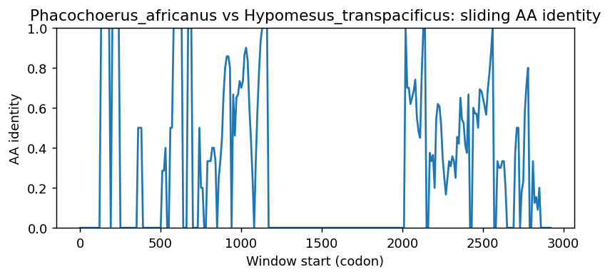
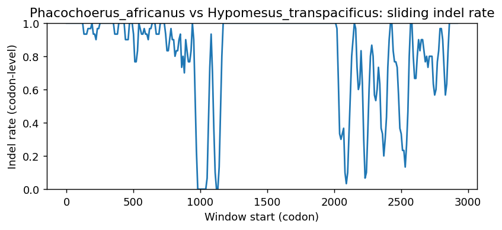
Phacochoerus_africanus vs Gasterosteus_aculeatus
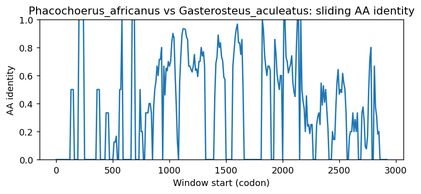
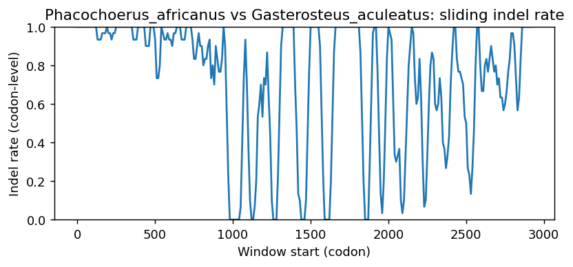
Phacochoerus_africanus vs Cynoglossus_semilaevis
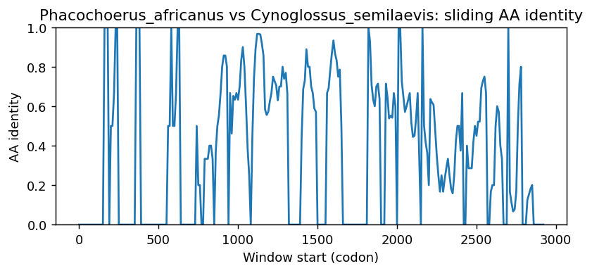
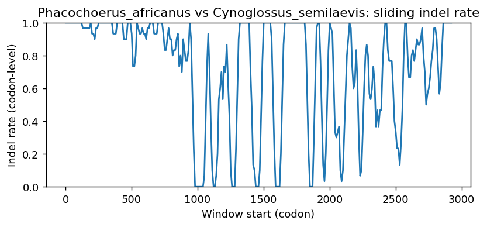
Phacochoerus_africanus vs Lampris_incognitus
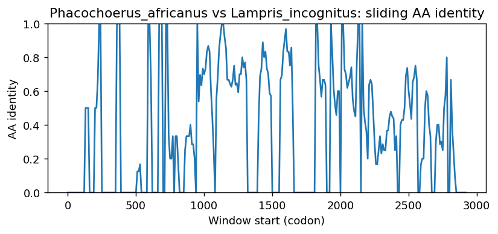
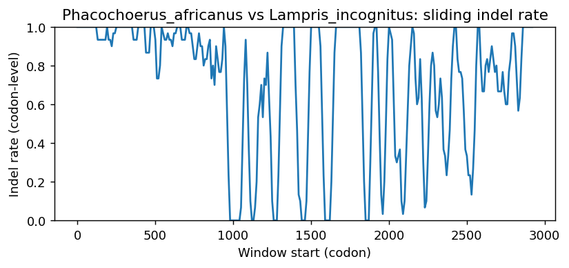
Phacochoerus_africanus vs Phyllopteryx_taeniolatus
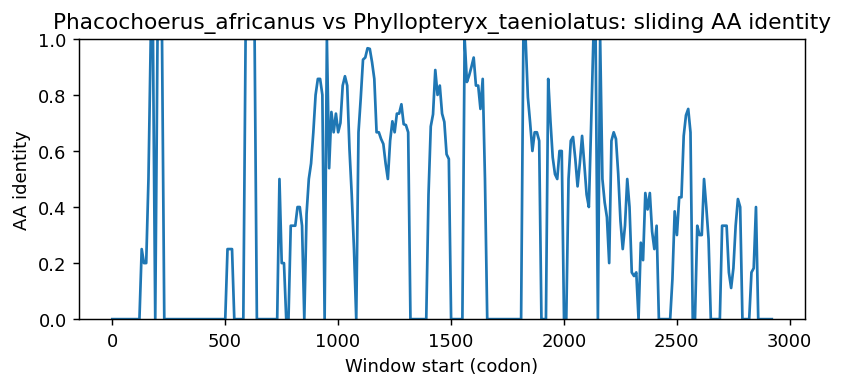
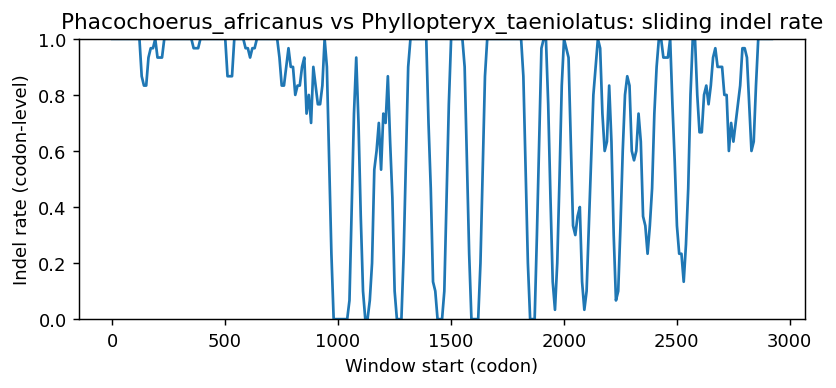
Phacochoerus_africanus vs Engraulis_encrasicolus
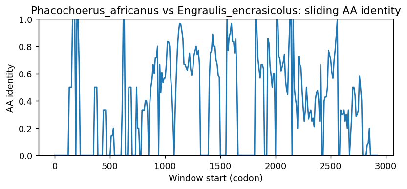
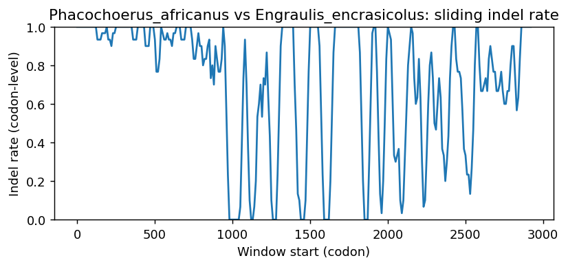
Methods (brief)
- CDS are translated (genetic code 1); proteins aligned by MAFFT when available, otherwise a progressive global aligner (BLOSUM62). Protein MSA is back-translated into a codon MSA.
- Pairwise metrics: AA/NT identities on aligned nongap positions; Ts/Tv; single-hit syn/nonsyn counts; gap events and largest contiguous gap cluster (codons); sliding-window AA identity and codon-level indel rate.
- Per-sequence diagnostics: GC content/skew, CpG density, AA low-complexity fraction via SEG-like entropy windows (win=12, H<2.2), and NT tandem repeats (homopolymers =5; di-nt =4 copies; tri-nt =3 copies).
- Correlations: Pearson/Spearman between AA identity and |GC difference|, mean AA LCR fraction, and mean NT repeat fraction across pairs.
- Risk classifier: combines identity, coverage, longest identical block, low-ID windows, max indel cluster, and up-ranks risk when mean LCR =0.25 or mean repeat =0.10 (soft-masking can remove seeds and reduce sensitivity).
Artifacts: pairwise_metrics.csv, per_sequence_composition.csv, correlations.csv, alignment_protein.faa, alignment_codon.fna.